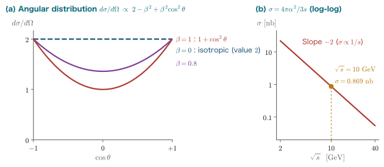
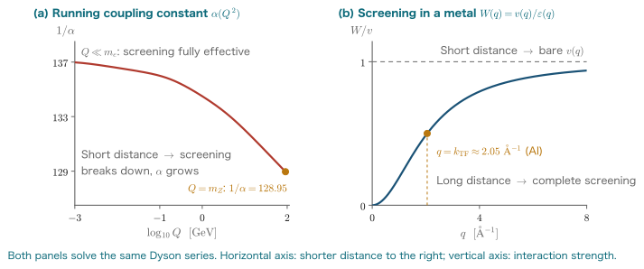

Chapter 10Quantum Electrodynamics
This is the chapter of the book in which we “get our hands dirty” the most. In Chapter 8 we prepared the idea of the Feynman rules, and in Chapter 9 the Dirac equation and spinors. The tools are now ready. All that remains is to assemble them in a real calculation and produce a number that can be measured.
Let us declare the goal at the outset. By the end of this chapter, the reader will be able to derive the following line unaided.
$$ \sigma(e^+e^-\to\mu^+\mu^-) = \frac{4\pi\alpha^2}{3s} = \frac{86.9\ \mathrm{nb}}{s\,[\mathrm{GeV^2}]} $$The right-hand side contains only measurable quantities. Here $\alpha=1/137.036$ is the fine-structure constant, and $s$ is the square of the center-of-mass energy. For an accelerator with $\sqrt{s}=10\ \mathrm{GeV}$ this gives $0.869\ \mathrm{nb}$, that is, about $10^{-9}$ times the cross section of an atomic nucleus. This number agrees with experiment to within a few percent. Draw one diagram, multiply by the spinors, take the trace, and integrate over the angle—that alone produces a number of the natural world. This experience is what quantum electrodynamics (QED) is.
QED is the theory, among all those humanity has obtained, that agrees most precisely with experiment. For the anomalous magnetic moment of the electron, $a_e=(g-2)/2$, theory and experiment agree to 10 significant figures (relative precision $10^{-10}$) once an independently measured $\alpha$ is used as input. We derive its leading three significant figures—Schwinger’s $\alpha/2\pi = 0.00116$—in this chapter.
Moreover, the tools of this chapter are the same as the tools of materials science. Vacuum polarization is the same as dielectric screening, renormalization is the same as the quasiparticle, and the running coupling constant is the same as the screened Coulomb interaction $W=\epsilon^{-1}v$—not as an analogy but in the form of the equations. That $\alpha$ runs with distance in QED, and that the Coulomb interaction in a metal is Thomas–Fermi screened, are both solutions of the same Dyson series $D=D_0/(1-D_0\Pi)$. What differs is the content of the polarization function $\Pi$—a pair-production loop of the vacuum (ultraviolet divergent, requiring charge renormalization) or a particle–hole loop of the Fermi sea (finite, requiring no renormalization)—and for that reason the long-distance limits also differ (in the vacuum $\alpha$ saturates at a finite value, whereas in a metal the force itself disappears). In Section 10.7 we set the two side by side and show even the places where the correspondence breaks down.
Furthermore, the cross sections computed in this chapter are directly tied to the practice of materials characterization. The Dirac cross section for positron annihilation supplies the prefactor $\pi r_e^2c$ in the analysis formula of positron annihilation lifetime spectroscopy (PALS) (the enhancement factor due to electron–positron correlation is introduced in Section 10.7.3), and the Klein–Nishina cross section for Compton scattering is the prefactor used when extracting the electron momentum distribution in Compton profile measurements. The formulas in a particle physics textbook go directly into the analysis codes of the laboratory.
- To write down the Feynman rules of QED accurately, conventions included (external-line factors $u,\bar u,v,\bar v,\epsilon,\epsilon^*$, the vertex $\ii g_e\gamma^\mu$, and the propagators)
- Why a fermion line is followed “against the arrow,” and the meaning of the $(-1)$ attached to a closed loop
- To write the amplitude $\mathcal{M}$ of the four representative processes (electron–muon scattering, $e^+e^-\to\mu^+\mu^-$, Compton scattering, and pair annihilation)
- Casimir’s trick—the technique that converts spin sums and averages into traces of $\gamma$ matrices
- To use the trace theorems with proofs, and contraction formulas such as $\gamma^\mu\slashed{a}\gamma_\mu=-2\slashed{a}$
- To derive to the end the differential cross section $\dd\sigma/\dd\Omega=(\alpha^2/4s)(1+\cos^2\theta)$ and the total cross section $4\pi\alpha^2/3s$ of $e^+e^-\to\mu^+\mu^-$
- To evaluate numerically the cross section at $\sqrt{s}=10\ \mathrm{GeV}$ in nb, and a preview of the $R$ ratio
- The Mott scattering formula, and the fact that its nonrelativistic limit is the Rutherford formula
- The three divergences of QED (self-energy, vacuum polarization, and vertex correction), and the ideas of regularization and renormalization
- The running coupling constant $\alpha(q^2)$ and $\alpha^{-1}(m_Z)=128.95$ (on-shell definition), and the anomalous magnetic moment $a=\alpha/2\pi$
- Connection to Materials Science: renormalization and the quasiparticle (effective mass $m^*$, quasiparticle weight (renormalization factor) $Z$)
- Connection to Materials Science: vacuum polarization $=$ dielectric screening, and the complete correspondence between $W=\epsilon^{-1}v$ and the running $\alpha$
- Connection to Materials Science: the positron annihilation cross section and PALS, and the Compton profile and Klein–Nishina
10.1 The Feynman Rules of QED
In Chapter 8 we practiced using the Feynman rules on fictitious particles without spin (the ABC model). The procedure there was: (i) draw the diagram, (ii) assign factors to external lines, vertices, and propagators, (iii) integrate over the internal momenta, and (iv) drop the overall $\delta$ function and read off $\mathcal{M}$. In QED the procedure is exactly the same. The only change is that the factors we assign are not numbers but matrices and spinors.
As a result, two new conventions are added. One is that matrix multiplication has an order, so we must decide “in which direction to read.” The other is that fermions anticommute, so a sign is attached between diagrams, or to a closed loop. In this section we lay out all of them.
10.1.1 Symbols and conventions
Definition: Symbols used in this chapter
- We write the four-momenta of external lines as $p_1,p_2,\dots$ and the momentum of an internal (virtual) line as $q$. The incoming particles are numbered 1 and 2, and the outgoing particles 3 and 4.
- The arguments of spinors are abbreviated by numbers: $u(1)\equiv u^{(s_1)}(p_1)$, $\bar u(3)\equiv\bar u^{(s_3)}(p_3)$, and so on.
- Feynman slash: $\slashed{p}\equiv p_\mu\gamma^\mu = p^0\gamma^0-\bm{p}\cdot\bm{\gamma}$.
- The coupling constant is $g_e\equiv\sqrt{4\pi\alpha}$ (the elementary charge in Heaviside–Lorentz units). Its numerical value is $g_e=\sqrt{4\pi/137.036}=0.30282$.
- $\alpha\equiv g_e^2/4\pi=1/137.036$ is the fine-structure constant.
Caution: Conventions for $e$, $g_e$, and $\alpha$
The way the elementary charge is written differs from textbook to textbook. In Gaussian units $\alpha=e^2/\hbar c$, so $e=\sqrt{\alpha}=0.0854$; in Heaviside–Lorentz units $\alpha=e^2/4\pi\hbar c$, so $e=\sqrt{4\pi\alpha}=0.3028$; and in SI $\alpha=e^2/4\pi\epsilon_0\hbar c$ and $e=1.602\times10^{-19}\ \mathrm{C}$. Following Griffiths, this book uses Heaviside–Lorentz units, and to avoid confusion it writes the elementary charge as $g_e$.
The sign of the vertex factor, $\ii g_e\gamma^\mu$ or $-\ii g_e\gamma^\mu$, also differs from textbook to textbook (the difference is whether the charge of the electron is taken to be $-g_e$, or $g_e$ is taken to be the “magnitude of the coupling”). This overall sign is unobservable in processes involving QED alone. The diagrams contributing to the same process always have the same parity of the number of vertices (it is determined by the number of external photon lines), so even if the signs of all vertices are reversed at once, each diagram merely receives a common factor $(\pm1)^n$, and the relative sign between interfering diagrams does not change. For example, the two diagrams of Compton scattering each have two vertices, so $(\pm\ii g_e)^2$ appears as a common factor. The convention matters when vertices of different kinds are mixed, as in the $\gamma$–$Z$ interference of Chapter 12, and then both vertices must be fixed in the same convention. Stick to one convention to the end, so as not to patch together formulas from different references. This book adopts $\ii g_e\gamma^\mu$ (it is the form obtained by putting the electron charge $q=-g_e$ into the general form $-\ii q\gamma^\mu$).
10.1.2 External-line factors
An external line is a line, entering or leaving at the edge of the diagram, that represents a real particle (one on the mass shell). As we saw in Chapter 9, the plane-wave solutions for a spin-$1/2$ particle can be written with four-component spinors $u$ (particle) and $v$ (antiparticle). For the external-line factor we simply take that spinor as it is. The rules are summarized completely in the following table.
| Particle | Incoming (left end) | Outgoing (right end) | Remarks |
|---|---|---|---|
| Electron (fermion) | $u(p)$ | $\bar u(p)$ | Four-component column/row spinors |
| Positron (antifermion) | $\bar v(p)$ | $v(p)$ | Note that it becomes $\bar v$ when incoming |
| Photon (incoming) | $\epsilon^\mu(p)$ | — | Polarization vector |
| Photon (outgoing) | — | $\epsilon^{*\mu}(p)$ | Complex conjugate |
Why is only the antiparticle “reversed”?
In Table 10.1, the electron has $u$ when incoming and $\bar u$ when outgoing, whereas the positron has $\bar v$ when incoming and $v$ when outgoing. This is not a perverse trick; it is a direct consequence of the convention adopted in Chapter 9, regarding the antiparticle (a negative-energy solution) as a particle running backward in time (the Feynman–Stückelberg interpretation).
In a diagram, a fermion line always carries an arrow. The arrow represents not the “flow of the particle” but the flow of fermion number. For an electron the arrow points in the same direction as time (left → right), and for a positron it points the opposite way. The rule for assigning factors can then be stated in a single sentence: “at the start of a line’s arrow put $u$ or $v$, and at the end of the arrow put $\bar u$ or $\bar v$.” The incoming line of a positron has its arrow pointing out of the diagram, so within the diagram it looks like the “end” of the arrow, and therefore the barred $\bar v$ is attached.
The trick for remembering this rule is: if you follow the line against the direction of the arrow, the factors line up from left to right (next subsection).
10.1.3 Vertex factor
Definition: The QED vertex
The fundamental vertex of QED is of only one kind: “two fermion lines and one photon line.” The factor assigned to it is
Here $\mu$ is the Lorentz index of the photon line attached to that vertex, and it is contracted with a propagator or with the polarization vector of an external line. For a fermion of charge $q$ in general it is $-\ii q\gamma^\mu$, and for the electron $q=-g_e$, so we obtain the form above.
Physical Meaning: Why the vertex factor is $\gamma^\mu$
It is no accident that $\gamma^\mu$ appears. The electromagnetic interaction of the Dirac field is fixed, from the minimal coupling $\partial_\mu\to D_\mu=\partial_\mu+\ii qA_\mu$ of Chapter 9 (charge $q$; for the electron $q=-g_e$), to the form
$$ \Lag_{\mathrm{int}} = -q\,\bar\psi\gamma^\mu\psi\,A_\mu = +g_e\,\bar\psi\gamma^\mu\psi\,A_\mu \qquad(\text{electron}) $$The quantity $j^\mu_{\mathrm{em}}=q\,\bar\psi\gamma^\mu\psi=-g_e\,\bar\psi\gamma^\mu\psi$ is the electromagnetic current derived in Chapter 9, and it couples to the electromagnetic potential $A_\mu$ in the form $\Lag_{\mathrm{int}}=-j^\mu_{\mathrm{em}}A_\mu$, exactly as in classical electromagnetism. In other words, the QED vertex is nothing but the interaction energy of classical electromagnetism rewritten with field operators. The vertex factor is the coefficient of this interaction term multiplied by $\ii$ (Chapter 13, Section 13.5.1), so in general it is $-\ii q\gamma^\mu$, and for the electron $\ii(+g_e)\gamma^\mu=\ii g_e\gamma^\mu$, which agrees with Eq. \eqref{eq:10-vertex}.
The magnitude of the coupling constant, $g_e=0.303$, is comfortably smaller than 1. Each additional vertex multiplies the amplitude by $g_e$ and the probability by $g_e^2=4\pi\alpha\simeq0.092$. The correction that comes with each added photon line (two more vertices), together with the $1/16\pi^2$ of the loop integral, remains effectively of order $\alpha/\pi\simeq2.3\times10^{-3}$. This is why perturbation theory can be used, and why QED can be calculated so precisely (for the strong interaction treated in Chapter 11, $\alpha_s\sim1$ at low energy (below $1\ \mathrm{GeV}$), and this luxury is lost. At high energy $\alpha_s\simeq0.1$–$0.2$ and perturbation theory can be used, but a precision comparable to that of QED cannot be obtained).
10.1.4 Propagators
We assign a propagator to each internal line (virtual particle). The propagator is a quantity that expresses “how readily a particle off the mass shell propagates,” and the essential point is that the denominator is $q^2-m^2$. The closer $q^2$ comes to $m^2$, the smaller the denominator and the larger the amplitude. This is a resonance (Chapter 8, Section 8.7.4; Appendix B, Section B.4).
Definition: Propagators of QED
Fermion propagator (momentum $q$, mass $m$):
Photon propagator (momentum $q$, mass 0, Feynman gauge):
Math Note: How to interpret the $\gamma$ matrix in the denominator
The Dirac equation in momentum space is $(\slashed{q}-m)u=0$, so the propagator should naturally be “the inverse matrix of $(\slashed{q}-m)$.” Indeed,
$$ (\slashed{q}-m)^{-1} = \frac{\slashed{q}+m}{(\slashed{q}-m)(\slashed{q}+m)} = \frac{\slashed{q}+m}{\slashed{q}\slashed{q}-m^2} = \frac{\slashed{q}+m}{q^2-m^2} $$In the second equality we used $\slashed{q}\slashed{q}=q_\mu q_\nu\gamma^\mu\gamma^\nu=\tfrac12 q_\mu q_\nu\{\gamma^\mu,\gamma^\nu\}=q_\mu q_\nu g^{\mu\nu}=q^2$ (since $q_\mu q_\nu$ is symmetric, the antisymmetric part drops out). In other words, the denominator is not a matrix but an ordinary number. This is the true nature of the apparently reckless operation of “dividing by a $\gamma$ matrix.”
Strictly speaking, an infinitesimal imaginary part $+\ii\epsilon$ enters the denominator, which should be $q^2-m^2+\ii\epsilon$. This guarantees causality (forward propagation). It plays the same role as the $\omega+\ii\eta$ of the retarded Green function in “Introduction to Linear Response Theory,” Chapter 5, but in field theory particles propagate toward the future and antiparticles toward the past, so it becomes Feynman’s $\ii\epsilon$ prescription. In the cross section calculations of this chapter we never pass through a pole, so we do not write the $\ii\epsilon$.
Caution: Gauge dependence of the photon propagator
Equation \eqref{eq:10-photon-prop} is the form in the Feynman gauge ($\xi=1$). In general it is
$$ \frac{-\ii}{q^2}\left[g_{\mu\nu}-(1-\xi)\frac{q_\mu q_\nu}{q^2}\right] $$which depends on $\xi$. However, observables (cross sections) do not depend on $\xi$. This is because the photon couples to the conserved current $\partial_\mu j^\mu=0$, so that terms proportional to $q_\mu q_\nu$ vanish at the moment of contraction, owing to $q_\mu j^\mu=0$. It suffices to use $\xi=1$, for which the calculation is easiest.
10.1.5 Following a fermion line, and signs
Rule: Follow a fermion line against the arrow
The factors arranged along a single fermion line (external-line spinors, vertex matrices, and propagators) are written, from left to right, in the order obtained by following the line against the direction of the arrow.
The result always takes the form
$$ \underbrace{\bar u\ \text{or}\ \bar v}_{\text{row vector}}\ \times\ (\text{product of 4×4 matrices})\ \times\ \underbrace{u\ \text{or}\ v}_{\text{column vector}} $$of “row × matrix × column,” and the whole is a single complex number (already contracted over the spinor indices). This is called a bilinear form.
Why is the opposite direction used?
Formally, it is because the interaction Hamiltonian is written in the order $\bar\psi\gamma^\mu\psi$: $\bar\psi$ (row) on the left and $\psi$ (column) on the right. Since this order accumulates every time we pass through a vertex, the direction in which we follow the line is “from the $\bar\psi$ side to the $\psi$ side,” that is, against the flow of fermion number (the arrow).
Practically, it is good to remember it this way: put the pen at the end point (the side where $\bar u$ is attached) and walk against the arrow to the start point (the side where $u$ is attached). Write down on the paper, in order, what you pass. This always gives the correct order.
Rule: Signs from closed loops and antisymmetrization
- Closed fermion loop: multiply by a factor $(-1)$ for each loop, and take the trace $\Tr[\cdots]$ of the product of matrices along the loop.
- Relative sign between diagrams: diagrams that go into one another under interchange of two incoming electrons (or two outgoing electrons, or an incoming electron and an outgoing positron) are multiplied by a relative $(-1)$.
- Momentum conservation: place $(2\pi)^4\delta^4(\textstyle\sum k)$ at each vertex, and integrate $\int\dd^4q/(2\pi)^4$ over each internal line. In the end an overall $(2\pi)^4\delta^4(p_1+p_2-p_3-p_4)$ remains, and what is left after removing it is $-\ii\mathcal{M}$.
Math Note: Where the $(-1)$ of a closed loop comes from
It is Fermi statistics. When field operators are contracted successively by Wick’s theorem, the contractions forming a closed loop require cyclically rearranging $\psi$ and $\bar\psi$, and because of the anticommutation of fermion operators, $\{\psi,\bar\psi\}$, an odd number of interchanges arises, giving $(-1)$.
This sign is not decoration. If this $(-1)$ is dropped in the vacuum polarization of Section 10.6, one obtains the physically wrong answer of antiscreening instead of screening. In the language of condensed matter, it is exactly the same as the $(-1)$ attached to the bubble diagram $\chi_0=-\ii\Tr[GG]$ of the RPA. Recall the sign of the polarization function in “Introduction to Linear Response Theory.”
| Step | What to do |
|---|---|
| 1. Labeling | Assign momenta $p_i$ and spins $s_i$ to the external lines and $q_j$ to the internal lines. Draw arrows on the fermion lines. |
| 2. External-line factors | Assign $u,\bar u,v,\bar v,\epsilon,\epsilon^*$ according to Table 10.1. |
| 3. Vertex factors | $\ii g_e\gamma^\mu$ at each vertex. |
| 4. Propagators | $\ii(\slashed{q}+m)/(q^2-m^2)$ for each internal fermion line and $-\ii g_{\mu\nu}/q^2$ for each internal photon line. |
| 5. Ordering | Follow each fermion line against the arrow and write the factors from left to right. |
| 6. Momentum conservation | $(2\pi)^4\delta^4(\sum k)$ at each vertex and $\int\dd^4 q/(2\pi)^4$ for each internal momentum. |
| 7. Signs | A factor $(-1)$ and a trace for each closed loop. A relative sign $(-1)$ between diagrams that differ by an exchange of identical particles. |
| 8. Finishing | Drop the overall $(2\pi)^4\delta^4(\sum p)$ and read the remainder as $-\ii\mathcal{M}$. |
10.2 Four Examples — Writing Down the Amplitude
Merely listing the rules does not make them stick. Let us actually write down $\mathcal{M}$ for four processes. The first two (electron–muon scattering and $e^+e^-\to\mu^+\mu^-$) need only a single diagram. The last two (Compton scattering and pair annihilation) have two diagrams, which interfere.
10.2.1 Example (a): Electron–muon scattering (a relative of Mott scattering)
Derivation: Amplitude for $e^-\mu^-\to e^-\mu^-$
Step 1: Draw the diagram and number the lines. As in Figure 10.2(a), the incoming electron is $p_1$, the incoming muon $p_2$, the outgoing electron $p_3$, and the outgoing muon $p_4$. There are two vertices and one internal photon line, whose momentum is $q=p_1-p_3$ (momentum conservation at the upper vertex). At the lower vertex we also have $p_2+q=p_4$, that is, $q=p_4-p_2$. That the two agree is precisely the overall momentum conservation $p_1+p_2=p_3+p_4$.
Step 2: Follow the electron line. The arrow points in the direction $1\to3$. Since we follow it against the arrow, we start from $3$ and go to $1$. What we meet, in order, is “the outgoing electron $\bar u(3)$,” “the vertex $\ii g_e\gamma^\mu$,” and “the incoming electron $u(1)$.” Hence
$$ \bar u(3)\,(\ii g_e\gamma^\mu)\,u(1) $$Step 3: Follow the muon line. In the same way,
$$ \bar u(4)\,(\ii g_e\gamma^\nu)\,u(2) $$The charge of the muon is $-1$, the same as that of the electron, so the vertex factor is the same, $\ii g_e\gamma^\nu$. (For a fermion whose charge is $Q_f$ in units of the elementary charge, the vertex factor is $-\ii Q_f g_e\gamma^\nu$. Since $Q_f=-1$ for both the electron and the muon, both have $\ii g_e\gamma^\nu$.)
Step 4: Connect with the photon propagator. Contract the indices $\mu,\nu$ of the two vertices with $-\ii g_{\mu\nu}/q^2$. Multiplying everything together,
$$ -\ii\mathcal{M} = \left[\bar u(3)\,\ii g_e\gamma^\mu\,u(1)\right] \frac{-\ii g_{\mu\nu}}{q^2} \left[\bar u(4)\,\ii g_e\gamma^\nu\,u(2)\right] $$Step 5: Tidy up the factors. Since $(\ii g_e)^2\times(-\ii)=(-g_e^2)(-\ii)=\ii g_e^2$,
$$ -\ii\mathcal{M}=\frac{\ii g_e^2}{q^2} \left[\bar u(3)\gamma^\mu u(1)\right]\left[\bar u(4)\gamma_\mu u(2)\right] $$Dividing both sides by $-\ii$ (with $\ii/(-\ii)=-1$),
That is all. Without writing out the contents of the spinors at all, the amplitude is fixed.
Physical Meaning: This is Coulomb scattering itself
The denominator of Eq. \eqref{eq:10-emu}, $q^2=(p_1-p_3)^2=t$, becomes $-\abs{\qq}^2$ in the nonrelativistic limit ($\qq$ is the three-vector momentum transfer). Therefore $\mathcal{M}\propto g_e^2/\abs{\qq}^2$. This agrees exactly with the Fourier transform of the Coulomb potential $V(r)=g_e^2/4\pi r$,
$$ \tilde V(\qq)=\int \frac{g_e^2}{4\pi r}\ee^{-\ii\qq\cdot\xx}\,\dd^3x = \frac{g_e^2}{\abs{\qq}^2} $$In other words, the picture of “exchange of a virtual photon” is nothing other than a restatement of Born-approximation Coulomb scattering in the language of field theory. In Section 10.5 we carry this calculation through to the end and reproduce the Rutherford formula.
Incidentally, if the photon had a mass $m_\gamma$, the denominator would become $\abs{\qq}^2+m_\gamma^2$, and in position space the potential would be of Yukawa type, $\ee^{-m_\gamma r}/r$. Note that the screened Coulomb interaction in solids, $4\pi e^2/(q^2+k_{\mathrm{TF}}^2)$ (written in Gaussian units following the convention of condensed matter physics; in the Heaviside–Lorentz units of this book it is $g_e^2/(q^2+k_{\mathrm{TF}}^2)$), has exactly this form (Section 10.7).
10.2.2 Example (b): $e^+e^-\to\mu^+\mu^-$
Derivation: Amplitude of the annihilation type (s-channel)
Step 1: Diagram and numbering. The incoming electron is $p_1$, the incoming positron $p_2$, the outgoing muon $p_3$, and the outgoing antimuon $p_4$. The momentum of the virtual photon is $q=p_1+p_2$, so $q^2=(p_1+p_2)^2=s$. This is positive and lies far from the photon mass shell $q^2=0$ (a timelike virtual photon).
Step 2: The fermion line on the electron side. The electron arrow enters the vertex from the upper left of the figure, and the positron arrow leaves the vertex toward the lower left of the figure (for a positron the flow of fermion number is reversed). That is, the arrow forms a single connected line running from the electron external line through the vertex to the positron external line. Following it against the arrow, the starting point is on the positron side, where Table 10.1 assigns $\bar v(2)$. Next comes the vertex $\ii g_e\gamma^\mu$, and finally $u(1)$:
$$ \bar v(2)\,(\ii g_e\gamma^\mu)\,u(1) $$Step 3: The muon side. By the same reasoning, starting from the outgoing muon $\bar u(3)$, passing through the vertex, and ending at the outgoing antimuon $v(4)$:
$$ \bar u(3)\,(\ii g_e\gamma^\nu)\,v(4) $$Step 4: Connect and tidy up.
$$ -\ii\mathcal{M}=\left[\bar v(2)\,\ii g_e\gamma^\mu\, u(1)\right]\frac{-\ii g_{\mu\nu}}{s}\left[\bar u(3)\,\ii g_e\gamma^\nu\, v(4)\right] =\frac{\ii g_e^2}{s}\left[\bar v(2)\gamma^\mu u(1)\right]\left[\bar u(3)\gamma_\mu v(4)\right] $$In Section 10.4 we start from this expression and carry the calculation through to the cross section.
Caution: How to tell the $s$ channel from the $t$ channel
Equations \eqref{eq:10-emu} and \eqref{eq:10-eemumu} differ only in what the denominator of the virtual-photon propagator is. The former has $t=(p_1-p_3)^2<0$ (spacelike), the latter $s=(p_1+p_2)^2>0$ (timelike).
In fact the two are linked by crossing symmetry. In the amplitude for $e^-\mu^-\to e^-\mu^-$, reading the incoming muon $p_2$ as an outgoing antimuon $-p_4'$ gives $e^-\mu^+\to e^-\mu^+$. Since only the muon line has been crossed, the denominator of the propagator remains $t=(p_1-p_3)^2$, and what gets interchanged is $s\leftrightarrow u$. If we further read the outgoing electron $p_3$ as an incoming positron $-p_2''$, we obtain $e^+e^-\to\mu^+\mu^-$, and then $t=(p_1-p_3)^2\to(p_1+p_2'')^2=s$; that is, $s\leftrightarrow t$ are interchanged. This is where the Mandelstam variables introduced in Chapter 4, with $s+t+u=\sum m_i^2$, come into play.
When $q^2>0$, however, the denominator vanishes if $q^2$ coincides with the square of the mass of some particle (a resonance). Indeed, at $\sqrt{s}=91.2\ \mathrm{GeV}$ the exchange of a $Z$ boson becomes important, and a QED-only calculation is no longer sufficient (Chapter 12). The reason we choose $\sqrt{s}=10\ \mathrm{GeV}$ in the numerical example of this chapter is that it is a “QED-only-is-correct” window: it is sufficiently far from the $Z$, and the electron mass is negligible there. (Note, however, that narrow $\Upsilon$ resonances line up in $9.46$–$10.58\ \mathrm{GeV}$, so we avoid sitting right on a resonance.)
10.2.3 Example (c): Compton scattering
$\gamma+e^-\to\gamma+e^-$. There are two diagrams that contribute at lowest order. There are four external lines (two photons and two electrons) and two vertices, so there are two possibilities: “which comes first, the absorption of photon 2 or the emission of photon 3.” Both are of the same order $g_e^2$, so we must add them before squaring.
Derivation: The Compton amplitude (sum of two diagrams)
Step 1: Diagram (c-1). The incoming electron is $p_1$ ($u(1)$), the incoming photon is $p_2$ ($\epsilon_2^\mu$), the outgoing photon is $p_3$ ($\epsilon_3^{*\nu}$), and the outgoing electron is $p_4$ ($\bar u(4)$). First photon 2 is absorbed, the electron propagates as a virtual electron, and then photon 3 is emitted. The momentum of the internal line is $q=p_1+p_2$. Following the electron line against the arrow, we obtain:
$$ \bar u(4)\,\underbrace{(\ii g_e\gamma^\nu)\epsilon^*_{3\nu}}_{\text{emission of photon 3}}\, \underbrace{\frac{\ii(\slashed{q}+m)}{q^2-m^2}}_{\text{virtual electron}}\, \underbrace{(\ii g_e\gamma^\mu)\epsilon_{2\mu}}_{\text{absorption of photon 2}}\,u(1) $$Since we can write $\gamma^\nu\epsilon^*_{3\nu}=\slashed{\epsilon}_3^{\,*}$ and $\gamma^\mu\epsilon_{2\mu}=\slashed{\epsilon}_2$, the numerical factor is $(\ii g_e)^2\times\ii=-\ii g_e^2$:
$$ -\ii\mathcal{M}_1 = -\ii g_e^2\,\bar u(4)\, \frac{\slashed{\epsilon}_3^{\,*}(\slashed{p}_1+\slashed{p}_2+m)\slashed{\epsilon}_2}{(p_1+p_2)^2-m^2}\,u(1) $$Step 2: Diagram (c-2). Photon 3 is emitted first and photon 2 is absorbed afterward. The momentum of the internal line is $q=p_1-p_3$. By the same procedure,
$$ -\ii\mathcal{M}_2 = -\ii g_e^2\,\bar u(4)\, \frac{\slashed{\epsilon}_2(\slashed{p}_1-\slashed{p}_3+m)\slashed{\epsilon}_3^{\,*}}{(p_1-p_3)^2-m^2}\,u(1) $$Note that the order of the matrices has changed. The earlier an operation occurs, the further to the right it appears (since we follow the line against the arrow, the right is the past).
Step 3: Rewrite the denominators in terms of kinematics. Since $p_1^2=m^2$ (the electron is on the mass shell) and $p_2^2=p_3^2=0$ (photons),
$$ (p_1+p_2)^2-m^2 = m^2+2p_1\!\cdot\! p_2 - m^2 = 2p_1\!\cdot\! p_2, \qquad (p_1-p_3)^2-m^2 = -2p_1\!\cdot\! p_3 $$Step 4: Take the sum. The two diagrams are transformed into each other by interchanging the incoming and outgoing photons, but what is interchanged is a boson, so the relative sign is $+$ (Rule 2, “Relative sign between diagrams,” in Section 10.1.5 concerns the interchange of fermions). Hence
The $-$ in the second term comes from taking the sign of the denominator $(p_1-p_3)^2-m^2=-2p_1\cdot p_3$ outside.
Math Note: Verification by gauge invariance
There is a powerful way to check whether Eq. \eqref{eq:10-compton} is correct. The physical amplitude should not change under a gauge transformation of the photon polarization vector, $\epsilon_2\to\epsilon_2+\lambda p_2$. Therefore, if we set $\epsilon_2\to p_2$, we must obtain $\mathcal{M}=0$.
Let us actually substitute. The numerator of the first term becomes $\slashed{\epsilon}_3^{\,*}(\slashed{p}_1+\slashed{p}_2+m)\slashed{p}_2$. Here we use $\slashed{p}_2\slashed{p}_2=p_2^2=0$ and $\slashed{p}_1\slashed{p}_2=2p_1\cdot p_2-\slashed{p}_2\slashed{p}_1$, and further apply $(\slashed{p}_1-m)u(1)=0$ (the Dirac equation) to the $u(1)$ at the right end, which gives
$$ (\slashed{p}_1+m)\slashed{p}_2 u(1) = (2p_1\!\cdot\! p_2-\slashed{p}_2\slashed{p}_1+m\slashed{p}_2)u(1) = (2p_1\!\cdot\! p_2)u(1)-\slashed{p}_2(\slashed{p}_1-m)u(1) = (2p_1\!\cdot\! p_2)u(1) $$so the first term turns into $g_e^2\,\bar u(4)\slashed{\epsilon}_3^{\,*}u(1)$. Computing the second term in the same way gives the same quantity with the opposite sign, so the two cancel neatly and we obtain $\mathcal{M}=0$. Neither of the two diagrams alone is gauge-invariant. Gauge invariance holds only when all the diagrams that should be there are added together. This is the best check for finding calculational mistakes.
10.2.4 Example (d): Pair annihilation $e^+e^-\to\gamma\gamma$
Derivation: The pair-annihilation amplitude
Step 1: Obtain it by crossing. This process is the crossing of Compton scattering. We need only reread the incoming photon $p_2$ as an outgoing photon $-p_4$, and the outgoing electron $p_4$ as an incoming positron $-p_2$. For practice, however, we write it down directly.
Step 2: The first diagram of (d). The incoming electron is $p_1$ ($u(1)$), the incoming positron is $p_2$ ($\bar v(2)$), and the outgoing photons are $p_3$ ($\epsilon_3^*$) and $p_4$ ($\epsilon_4^*$). Following the electron line, we start from $\bar v(2)$ on the positron side, and then come the emission vertex of photon 4, the virtual electron (momentum $p_1-p_3$), the emission vertex of photon 3, and $u(1)$, in that order:
$$ -\ii\mathcal{M}_1=-\ii g_e^2\,\bar v(2)\, \frac{\slashed{\epsilon}_4^{\,*}(\slashed{p}_1-\slashed{p}_3+m)\slashed{\epsilon}_3^{\,*}}{(p_1-p_3)^2-m^2}\,u(1) $$Step 3: The second diagram is obtained by interchanging the photons. $3\leftrightarrow4$:
$$ -\ii\mathcal{M}_2=-\ii g_e^2\,\bar v(2)\, \frac{\slashed{\epsilon}_3^{\,*}(\slashed{p}_1-\slashed{p}_4+m)\slashed{\epsilon}_4^{\,*}}{(p_1-p_4)^2-m^2}\,u(1) $$Step 4: The denominators. From $p_1^2=m^2$ and $p_3^2=p_4^2=0$, we have $(p_1-p_3)^2-m^2=-2p_1\cdot p_3$ and $(p_1-p_4)^2-m^2=-2p_1\cdot p_4$. Therefore
Connection to Materials Science: Dirac’s annihilation cross section is the starting point of PALS
Starting from Eq. \eqref{eq:10-annihilation} and taking the spin average, we obtain the complete $2\gamma$ annihilation cross section that Dirac derived in 1930. Its nonrelativistic limit (positron velocity $v\ll c$, that is, $\beta\ll1$) takes the following simple form:
The factor $1/\beta$ appears because the slower a particle is, the longer it stays “near its partner.” The cross section itself therefore diverges, but what is meaningful in experiments is the annihilation probability per unit time (the annihilation rate), in which the $\beta$ cancels and which is therefore finite:
$$ \lambda = \sigma_{2\gamma}\,v\,n_e = \pi r_e^2 c\, n_e $$Here $n_e$ is the electron density at the position of the positron. Inserting numbers, $\pi r_e^2 c=7.48\times10^{-21}\ \mathrm{m^3\,s^{-1}}$.
This one line is the foundation of the entire materials-characterization method called positron annihilation lifetime spectroscopy (PALS). The positron lifetime $\tau=1/\lambda$ is (setting aside the enhancement factor due to electron–positron correlation) proportional to the inverse of the electron density felt by the positron. In practice $n_e$ must be replaced by the effective electron density including the enhancement factor, and since the enhancement factor itself depends on the electron density, the lifetime and the density are not simply inversely proportional (we check this with numbers in Section 10.7.3). When a positron is trapped in a vacancy, there are no positive ions there, so the electron density is low and $\tau$ becomes longer. In this way, measuring the lifetime becomes measuring the vacancy concentration. We check this with numbers in Section 10.7.
10.3 Casimir’s Trick and the Trace Theorems
Once the amplitude $\mathcal{M}$ has been written down, next comes $\abs{\mathcal{M}}^2$. However, $\mathcal{M}$ contains the spinors $u^{(s)}(p)$, which depend on the spin $s$. In experiments, usually
- the spins of the incoming particles are not controlled (an unpolarized beam), so we take the average over the initial spins,
- the spins of the outgoing particles are not measured, so we take the sum over the final-state spins,
and this operation is necessary. If there are two spin-$1/2$ particles on the incoming side, the average is $\tfrac12\times\tfrac12=\tfrac14$. We write this operation as
$$ \braket{\abs{\mathcal{M}}^2}\equiv\frac{1}{4}\sum_{\text{all spins}}\abs{\mathcal{M}}^2 $$If we do it naively, each of the four external spinors has two spin states, so we would have to write down $2^4=16$ combinations in total and carry out 16 multiplications. This is tiresome.
Here there is a remarkable technique found by Casimir. It converts the spin sum into a trace of $\gamma$ matrices. Then the answer comes out from matrix algebra alone, without ever writing down the explicit form of the spinors. This is called Casimir’s trick.
10.3.1 The complex conjugate of a bilinear form
Theorem: The conjugate of a bilinear form
For any $4\times4$ matrix $\Gamma$, define $\bar\Gamma\equiv\gamma^0\Gamma^\dagger\gamma^0$. Then
$$ \begin{equation} \left[\bar u(a)\,\Gamma\,u(b)\right]^* = \bar u(b)\,\bar\Gamma\,u(a) \label{eq:10-bilinear-conj} \end{equation} $$holds (the same holds with $u$ replaced by $v$). In particular, $\overline{\gamma^\mu}=\gamma^\mu$, $\overline{\gamma^\mu\gamma^\nu}=\gamma^\nu\gamma^\mu$, $\overline{\gamma^5}=-\gamma^5$, and $\overline{\gamma^\mu\gamma^5}=\gamma^\mu\gamma^5$.
Derivation: Proof of Eq. \eqref{eq:10-bilinear-conj}
Step 1: $\bar u\Gamma u$ is a $1\times1$ matrix (just a number), so its complex conjugate equals its Hermitian conjugate: $[\bar u(a)\Gamma u(b)]^*=[\bar u(a)\Gamma u(b)]^\dagger = u(b)^\dagger\Gamma^\dagger \bar u(a)^\dagger$.
Step 2: From the definition $\bar u=u^\dagger\gamma^0$, we have $\bar u(a)^\dagger=(u(a)^\dagger\gamma^0)^\dagger=\gamma^{0\dagger}u(a)=\gamma^0u(a)$ ($\gamma^0$ is Hermitian).
Step 3: $u(b)^\dagger = \bar u(b)\gamma^0$ (we used $\gamma^0\gamma^0=1$). Therefore
$$ [\bar u(a)\Gamma u(b)]^* = \bar u(b)\gamma^0\,\Gamma^\dagger\,\gamma^0 u(a) = \bar u(b)\bar\Gamma u(a) $$Step 4: Check the specific examples. $\overline{\gamma^\mu}=\gamma^0\gamma^{\mu\dagger}\gamma^0$. Using the property $\gamma^{\mu\dagger}=\gamma^0\gamma^\mu\gamma^0$ from Appendix C, we get $\gamma^0(\gamma^0\gamma^\mu\gamma^0)\gamma^0=\gamma^\mu$. For a product, $\overline{AB}=\gamma^0(AB)^\dagger\gamma^0=\gamma^0B^\dagger A^\dagger\gamma^0 = (\gamma^0B^\dagger\gamma^0)(\gamma^0A^\dagger\gamma^0)=\bar B\bar A$, so the order is reversed. For $\gamma^5=\ii\gamma^0\gamma^1\gamma^2\gamma^3$, since $\gamma^{5\dagger}=\gamma^5$ and $\{\gamma^5,\gamma^0\}=0$, we have $\overline{\gamma^5}=\gamma^0\gamma^5\gamma^0=-\gamma^5$.
10.3.2 Casimir’s trick
Theorem: Casimir’s trick
Using the spin-sum formulas (Chapter 9)
$$ \sum_{s}u^{(s)}(p)\bar u^{(s)}(p)=\slashed{p}+m, \qquad \sum_{s}v^{(s)}(p)\bar v^{(s)}(p)=\slashed{p}-m $$we have
When an antiparticle spinor $v$ appears, it suffices to replace the corresponding $(\slashed{p}+m)$ by $(\slashed{p}-m)$.
Derivation: Proof of Casimir’s trick
Step 1: Write the spinor indices explicitly. $\bar u(a)\Gamma_1u(b)=\bar u_i(a)(\Gamma_1)_{ij}u_j(b)$ ($i,j$ are spinor indices running from 1 to 4, and they are summed over). Similarly, by Eq. \eqref{eq:10-bilinear-conj}, the second factor is
$$ \left[\bar u(a)\Gamma_2u(b)\right]^*=\bar u(b)\bar\Gamma_2 u(a)=\bar u_k(b)(\bar\Gamma_2)_{k\ell}u_\ell(a) $$Step 2: Rearrange the product. Each component is just a number, so the order can be interchanged freely:
$$ \sum_{s_a,s_b} u_\ell(a)\bar u_i(a)\,(\Gamma_1)_{ij}\,u_j(b)\bar u_k(b)\,(\bar\Gamma_2)_{k\ell} $$Step 3: Carry out the spin sums. Substituting $\sum_{s_a}u_\ell(a)\bar u_i(a)=(\slashed{p}_a+m_a)_{\ell i}$ and $\sum_{s_b}u_j(b)\bar u_k(b)=(\slashed{p}_b+m_b)_{jk}$, we obtain
$$ (\slashed{p}_a+m_a)_{\ell i}(\Gamma_1)_{ij}(\slashed{p}_b+m_b)_{jk}(\bar\Gamma_2)_{k\ell} $$Step 4: Read off the indices. The indices go all the way around, $\ell\to i\to j\to k\to\ell$. This is precisely the trace of a matrix product:
$$ =\Tr\!\left[(\slashed{p}_a+m_a)\Gamma_1(\slashed{p}_b+m_b)\bar\Gamma_2\right] =\Tr\!\left[\Gamma_1(\slashed{p}_b+m_b)\bar\Gamma_2(\slashed{p}_a+m_a)\right] $$The last equality follows from the cyclicity of the trace, $\Tr(ABC)=\Tr(BCA)$. This completes the proof.
Why is this “remarkable”?
The power of Casimir’s trick lies in the fact that spinors, objects that have a “direction,” disappear completely, and only matrix algebra remains. The explicit form of $u^{(s)}(p)$ depends on the representation (Dirac–Pauli or Weyl) and also on the direction of $p$, but the trace depends on neither.
In condensed matter physics, it is much like the way the sum over the spin degree of freedom is disposed of with the single phrase “$\mathrm{tr}_\sigma$,” leaving only the calculation of band characters. The difference is that in QED the sum is over the spinor representation of the Lorentz group, so the result is automatically written using only the Lorentz-invariant dot products $p_i\cdot p_j$. This provides a powerful check: if a quantity that is not Lorentz-invariant appears in the middle of a calculation, it is a mistake.
10.3.3 The trace theorems
From here on, all we need is to be able to compute traces of products of $\gamma$ matrices. The formulas we need are exhausted by the following table. All of them follow from $\{\gamma^\mu,\gamma^\nu\}=2g^{\mu\nu}\mathbb{1}$ and $\Tr(\mathbb{1})=4$.
| No. | Formula | How to remember |
|---|---|---|
| T1 | $\Tr(\mathbb{1})=4$ | Because there are four components |
| T2 | The trace of a product of an odd number of $\gamma$ matrices $=0$ | Insert $\gamma^5$ |
| T3 | $\Tr(\gamma^\mu\gamma^\nu)=4g^{\mu\nu}$ | Half of the anticommutation relation |
| T4 | $\Tr(\gamma^\mu\gamma^\nu\gamma^\rho\gamma^\sigma)=4\left(g^{\mu\nu}g^{\rho\sigma}-g^{\mu\rho}g^{\nu\sigma}+g^{\mu\sigma}g^{\nu\rho}\right)$ | Three pairings; only the middle one has $-$ |
| T5 | $\Tr(\gamma^5)=0$ | |
| T6 | $\Tr(\gamma^\mu\gamma^\nu\gamma^5)=0$ | 0 if there are fewer than four $\gamma$ matrices |
| T7 | $\Tr(\gamma^\mu\gamma^\nu\gamma^\rho\gamma^\sigma\gamma^5)=-4\ii\,\epsilon^{\mu\nu\rho\sigma}$ | Totally antisymmetric; used in the weak interaction |
| T8 | $\Tr(\slashed{a}\slashed{b})=4\,a\!\cdot\! b$ | Contracted form of T3 |
| T9 | $\Tr(\slashed{a}\slashed{b}\slashed{c}\slashed{d})=4\left[(a\!\cdot\! b)(c\!\cdot\! d)-(a\!\cdot\! c)(b\!\cdot\! d)+(a\!\cdot\! d)(b\!\cdot\! c)\right]$ | Contracted form of T4 |
Derivation: Proof of the trace theorems
T3: $\Tr(\gamma^\mu\gamma^\nu)=4g^{\mu\nu}$. By the cyclicity of the trace, $\Tr(\gamma^\mu\gamma^\nu)=\Tr(\gamma^\nu\gamma^\mu)$. Therefore
$$ \Tr(\gamma^\mu\gamma^\nu)=\tfrac12\Tr(\gamma^\mu\gamma^\nu+\gamma^\nu\gamma^\mu) =\tfrac12\Tr(2g^{\mu\nu}\mathbb{1})=g^{\mu\nu}\Tr(\mathbb{1})=4g^{\mu\nu} $$T2: An odd number gives 0. We use $\gamma^5\gamma^5=\mathbb{1}$ and $\{\gamma^5,\gamma^\mu\}=0$. For a product of $n$ matrices, $A=\gamma^{\mu_1}\cdots\gamma^{\mu_n}$,
$$ \Tr(A)=\Tr(A\gamma^5\gamma^5) \stackrel{\text{cyclicity}}{=}\Tr(\gamma^5A\gamma^5) $$Anticommuting $\gamma^5$ through all $n$ of the $\gamma$ matrices in $A$ and sending it to the right produces a factor $(-1)^n$:
$$ \Tr(\gamma^5A\gamma^5)=(-1)^n\Tr(A\gamma^5\gamma^5)=(-1)^n\Tr(A) $$If $n$ is odd, then $\Tr(A)=-\Tr(A)$, that is, $\Tr(A)=0$.
T4: A product of four. Using the anticommutation relation $\gamma^\mu\gamma^\nu=2g^{\mu\nu}-\gamma^\nu\gamma^\mu$, we carry the leftmost $\gamma^\mu$ to the right end. Each time it is moved, a $2g$ term arises:
$$ \begin{aligned} \Tr(\gamma^\mu\gamma^\nu\gamma^\rho\gamma^\sigma) &=2g^{\mu\nu}\Tr(\gamma^\rho\gamma^\sigma)-\Tr(\gamma^\nu\gamma^\mu\gamma^\rho\gamma^\sigma)\\ &=8g^{\mu\nu}g^{\rho\sigma}-2g^{\mu\rho}\Tr(\gamma^\nu\gamma^\sigma)+\Tr(\gamma^\nu\gamma^\rho\gamma^\mu\gamma^\sigma)\\ &=8g^{\mu\nu}g^{\rho\sigma}-8g^{\mu\rho}g^{\nu\sigma}+2g^{\mu\sigma}\Tr(\gamma^\nu\gamma^\rho)-\Tr(\gamma^\nu\gamma^\rho\gamma^\sigma\gamma^\mu) \end{aligned} $$Applying cyclicity to the last term gives $\Tr(\gamma^\nu\gamma^\rho\gamma^\sigma\gamma^\mu)=\Tr(\gamma^\mu\gamma^\nu\gamma^\rho\gamma^\sigma)$, which is the same as the left-hand side. Calling this $T$, we have
$$ 2T = 8\left(g^{\mu\nu}g^{\rho\sigma}-g^{\mu\rho}g^{\nu\sigma}+g^{\mu\sigma}g^{\nu\rho}\right) $$that is, we obtain T4. By the same method, the traces of six and of eight matrices can also be written down (the numbers of terms are 15 and 105, respectively, the number of ways of pairing up the indices of the $\gamma$ matrices two at a time).
T5: $\Tr(\gamma^5)=0$. We insert $\gamma^0\gamma^0=\mathbb{1}$ and use the fact that $\gamma^5$ and $\gamma^0$ anticommute:
$$ \Tr(\gamma^5)=\Tr(\gamma^0\gamma^0\gamma^5)=-\Tr(\gamma^0\gamma^5\gamma^0) \stackrel{\text{cyclicity}}{=}-\Tr(\gamma^5\gamma^0\gamma^0)=-\Tr(\gamma^5) $$T6: $\Tr(\gamma^\mu\gamma^\nu\gamma^5)=0$. If $\mu=\nu$, then $\gamma^\mu\gamma^\mu=g^{\mu\mu}\mathbb{1}$ (no sum), so this reduces to T5 and vanishes. If $\mu\ne\nu$, choose an index $\rho$ with $\rho\ne\mu,\nu$ (one always exists in four dimensions). Insert $\gamma^\rho\gamma^\rho=g^{\rho\rho}\mathbb{1}=\pm\mathbb{1}$ and carry one of the $\gamma^\rho$ to the right of $\gamma^\mu\gamma^\nu\gamma^5$. Since $\gamma^\rho$ anticommutes with all of $\gamma^\mu,\gamma^\nu,\gamma^5$, we get $(-1)^3=-1$:
$$ g^{\rho\rho}\Tr(\gamma^\mu\gamma^\nu\gamma^5)=\Tr(\gamma^\rho\gamma^\rho\gamma^\mu\gamma^\nu\gamma^5) =-\Tr(\gamma^\rho\gamma^\mu\gamma^\nu\gamma^5\gamma^\rho) =-\Tr(\gamma^\rho\gamma^\rho\gamma^\mu\gamma^\nu\gamma^5) $$Therefore $\Tr(\gamma^\mu\gamma^\nu\gamma^5)=0$. By the same argument, the products of one or three $\gamma$ matrices with $\gamma^5$ also vanish.
T7: Four matrices $+\gamma^5$. The result must be totally antisymmetric in $\mu\nu\rho\sigma$ (because if two indices are the same, it vanishes by the argument of T6 above). The only totally antisymmetric tensor in four dimensions is $\epsilon^{\mu\nu\rho\sigma}$, so it must take the form $\Tr(\gamma^\mu\gamma^\nu\gamma^\rho\gamma^\sigma\gamma^5)=C\epsilon^{\mu\nu\rho\sigma}$. The coefficient $C$ is determined by inserting $\mu\nu\rho\sigma=0123$:
$$ \Tr(\gamma^0\gamma^1\gamma^2\gamma^3\gamma^5) =\Tr(-\ii\gamma^5\gamma^5)=-\ii\Tr(\mathbb{1})=-4\ii $$Here we used $\gamma^5=\ii\gamma^0\gamma^1\gamma^2\gamma^3$, that is, $\gamma^0\gamma^1\gamma^2\gamma^3=-\ii\gamma^5$. Since $\epsilon^{0123}=+1$, we have $C=-4\ii$, that is, T7 follows.
Caution: Sign conventions for $\epsilon^{\mu\nu\rho\sigma}$
The sign in T7 depends entirely on the convention for the $\epsilon$ tensor. This book adopts $\epsilon^{0123}=+1$ (and hence $\epsilon_{0123}=-1$), so $\Tr(\gamma^\mu\gamma^\nu\gamma^\rho\gamma^\sigma\gamma^5)=-4\ii\epsilon^{\mu\nu\rho\sigma}$. In books such as Griffiths’s that take $\epsilon^{0123}=-1$, it becomes $+4\ii\epsilon^{\mu\nu\rho\sigma}$.
In QED cross sections, $\gamma^5$ does not appear, so there is no need to worry, but in the weak interaction of Chapter 12 ($V-A$ coupling), T7 plays the leading role, and getting the sign wrong reverses the direction of parity nonconservation. Be sure to come back to this box then.
10.3.4 Contraction formulas
Before taking the trace, it makes the calculation much lighter to collapse any $\gamma$ matrices sandwiched between a pair of identical indices. It is useful to memorize the following four.
Theorem: Contraction formulas
$$ \begin{aligned} \text{C1:}&\quad \gamma^\mu\gamma_\mu=4\\ \text{C2:}&\quad \gamma^\mu\slashed{a}\gamma_\mu=-2\slashed{a}\\ \text{C3:}&\quad \gamma^\mu\slashed{a}\slashed{b}\gamma_\mu=4\,(a\!\cdot\! b)\\ \text{C4:}&\quad \gamma^\mu\slashed{a}\slashed{b}\slashed{c}\gamma_\mu=-2\,\slashed{c}\slashed{b}\slashed{a} \end{aligned} $$Derivation: Proof of the contraction formulas
C1: $\gamma^\mu\gamma_\mu=g_{\mu\nu}\gamma^\mu\gamma^\nu$. Since $g_{\mu\nu}$ is symmetric, only the symmetric part of $\gamma^\mu\gamma^\nu$ contributes:
$$ g_{\mu\nu}\gamma^\mu\gamma^\nu=\tfrac12 g_{\mu\nu}\{\gamma^\mu,\gamma^\nu\}=g_{\mu\nu}g^{\mu\nu}\mathbb{1}=4 $$(In four dimensions, $g_{\mu\nu}g^{\mu\nu}=\delta^\mu_\mu=4$.)
C2: Use $\gamma^\mu\gamma^\nu=2g^{\mu\nu}-\gamma^\nu\gamma^\mu$ to move $\gamma^\mu$ one place to the right:
$$ \gamma^\mu\slashed{a}\gamma_\mu=a_\nu\gamma^\mu\gamma^\nu\gamma_\mu =a_\nu(2g^{\mu\nu}-\gamma^\nu\gamma^\mu)\gamma_\mu =2\slashed{a}-\slashed{a}\,(\gamma^\mu\gamma_\mu)=2\slashed{a}-4\slashed{a}=-2\slashed{a} $$C3: First use $\gamma^\mu\slashed{a}=2a^\mu-\slashed{a}\gamma^\mu$ (an intermediate step of C2):
$$ \gamma^\mu\slashed{a}\slashed{b}\gamma_\mu=(2a^\mu-\slashed{a}\gamma^\mu)\slashed{b}\gamma_\mu =2\slashed{b}\slashed{a}-\slashed{a}(\gamma^\mu\slashed{b}\gamma_\mu) =2\slashed{b}\slashed{a}+2\slashed{a}\slashed{b} $$Here $\{\slashed{a},\slashed{b}\}=a_\mu b_\nu\{\gamma^\mu,\gamma^\nu\}=2\,a\cdot b$, so the last expression is $2\{\slashed{a},\slashed{b}\}=4\,(a\cdot b)$.
C4: In the same way,
$$ \gamma^\mu\slashed{a}\slashed{b}\slashed{c}\gamma_\mu=2a^\mu\slashed{b}\slashed{c}\gamma_\mu-\slashed{a}(\gamma^\mu\slashed{b}\slashed{c}\gamma_\mu) =2\slashed{b}\slashed{c}\slashed{a}-4(b\!\cdot\! c)\slashed{a} $$Substituting $2(b\cdot c)=\slashed{b}\slashed{c}+\slashed{c}\slashed{b}$ here gives
$$ =2\slashed{b}\slashed{c}\slashed{a}-2(\slashed{b}\slashed{c}+\slashed{c}\slashed{b})\slashed{a}=-2\slashed{c}\slashed{b}\slashed{a} $$The reversal of the order is the hallmark of C4.
Example: Getting our hands dirty
Let us compute the following trace (this is exactly the form we will actually use in Section 10.4).
$$ \Tr\!\left[\gamma^\mu\slashed{p}_1\gamma^\nu\slashed{p}_2\right] $$We use T4. Writing $\slashed{p}_1=p_{1\alpha}\gamma^\alpha$ and $\slashed{p}_2=p_{2\beta}\gamma^\beta$, we have
$$ \begin{aligned} \Tr\!\left[\gamma^\mu\gamma^\alpha\gamma^\nu\gamma^\beta\right]p_{1\alpha}p_{2\beta} &=4\left(g^{\mu\alpha}g^{\nu\beta}-g^{\mu\nu}g^{\alpha\beta}+g^{\mu\beta}g^{\alpha\nu}\right)p_{1\alpha}p_{2\beta}\\ &=4\left(p_1^\mu p_2^\nu-g^{\mu\nu}(p_1\!\cdot\! p_2)+p_2^\mu p_1^\nu\right) \end{aligned} $$That the result is invariant under the simultaneous exchange $(\mu\leftrightarrow\nu$ and $p_1\leftrightarrow p_2)$ could have been predicted from the fact that the original quantity is, together with the cyclicity of the trace. That it is also symmetric under $\mu\leftrightarrow\nu$ alone follows if we additionally use the property that the trace does not change when the order of the matrices is reversed, $\Tr(\gamma^{a_1}\cdots\gamma^{a_n})=\Tr(\gamma^{a_n}\cdots\gamma^{a_1})$ (the reversal theorem). Getting into the habit of making this kind of structural check every time greatly reduces calculational mistakes.
10.4 Computing a Cross Section to the End
We have now reached the high point of this chapter. We compute the cross section of $e^+e^-\to\mu^+\mu^-$, from the amplitude in Eq. \eqref{eq:10-eemumu} all the way to a number that can be compared with experiment, without skipping a single step along the way.
There are three reasons for choosing this process. First, it is the simplest (one diagram, a two-body final state). Second, it has been measured very precisely in experiments and can be compared with theory. Third, it serves as the yardstick for every $e^+e^-$ collision experiment. The ratio $R$ obtained by dividing the hadron production cross section by this value directly tells us the number of quark colors, $N_c=3$ (Section 10.4.5 and Chapter 11).
10.4.1 Spin average of $\abs{\mathcal{M}}^2$
Derivation: Steps 1–3 — Reducing to two traces
Step 1: Write down $\abs{\mathcal{M}}^2$. From Eq. \eqref{eq:10-eemumu},
$$ \abs{\mathcal{M}}^2=\frac{g_e^4}{s^2} \left[\bar v(2)\gamma^\mu u(1)\right]\left[\bar v(2)\gamma^\nu u(1)\right]^* \left[\bar u(3)\gamma_\mu v(4)\right]\left[\bar u(3)\gamma_\nu v(4)\right]^* $$We prepared two sets of Lorentz indices ($\mu$ and $\nu$) because $\abs{\mathcal{M}}^2$ is the product of the amplitude and its conjugate. We have simply renamed the indices on the conjugate side as $\nu$.
Step 2: Spin sum on the initial side (electron and positron). We apply Casimir’s trick, Eq. \eqref{eq:10-casimir}, noting the replacement $(\slashed{p}+m)\to(\slashed{p}-m)$ for the case where $v$ appears. Since $\overline{\gamma^\nu}=\gamma^\nu$,
$$ \sum_{s_1,s_2}\left[\bar v(2)\gamma^\mu u(1)\right]\left[\bar v(2)\gamma^\nu u(1)\right]^* =\Tr\!\left[\gamma^\mu(\slashed{p}_1+m_e)\gamma^\nu(\slashed{p}_2-m_e)\right]\equiv L^{\mu\nu} $$We call this the lepton tensor. Here $p_1$ is the electron ($+m_e$) and $p_2$ is the positron ($-m_e$).
Step 3: Spin sum on the final-state side (muons). Similarly,
$$ \sum_{s_3,s_4}\left[\bar u(3)\gamma_\mu v(4)\right]\left[\bar u(3)\gamma_\nu v(4)\right]^* =\Tr\!\left[\gamma_\mu(\slashed{p}_4-m_\mu)\gamma_\nu(\slashed{p}_3+m_\mu)\right]\equiv M_{\mu\nu} $$Hence, including the average over the initial spins ($\tfrac14$),
Not a single spinor remains. All that is left is to take the traces and contract.
Derivation: Step 4 — The two tensors
Step 4a: The lepton tensor. Expanding gives four terms, but the terms with an odd number of $\gamma$ matrices (those carrying just one factor of $m_e$) vanish by T2:
$$ L^{\mu\nu}=\Tr\!\left[\gamma^\mu\slashed{p}_1\gamma^\nu\slashed{p}_2\right]-m_e^2\Tr\!\left[\gamma^\mu\gamma^\nu\right] $$From the example in Section 10.3.4 and T3,
$$ L^{\mu\nu}=4\left[p_1^\mu p_2^\nu+p_1^\nu p_2^\mu-g^{\mu\nu}(p_1\!\cdot\! p_2)\right]-4m_e^2g^{\mu\nu} =4\left[p_1^\mu p_2^\nu+p_1^\nu p_2^\mu-g^{\mu\nu}\left(p_1\!\cdot\! p_2+m_e^2\right)\right] $$Step 4b: The muon tensor. By exactly the same calculation (paying attention to where the signs go),
$$ M_{\mu\nu}=4\left[p_{3\mu}p_{4\nu}+p_{3\nu}p_{4\mu}-g_{\mu\nu}\left(p_3\!\cdot\! p_4+m_\mu^2\right)\right] $$Step 5: Contract. Since $m_e^2$ is only $2.6\times10^{-7}\ \mathrm{GeV^2}$ compared with $s=100\ \mathrm{GeV^2}$, we set $m_e=0$ from here on (the error is of order $10^{-9}$). We keep $m_\mu$. We compute $L^{\mu\nu}M_{\mu\nu}$ term by term:
$$ \begin{aligned} \tfrac{1}{16}L\!\cdot\! M =\ &\left[p_1^\mu p_2^\nu+p_1^\nu p_2^\mu-g^{\mu\nu}(p_1\!\cdot\! p_2)\right] \left[p_{3\mu}p_{4\nu}+p_{3\nu}p_{4\mu}-g_{\mu\nu}(p_3\!\cdot\! p_4+m_\mu^2)\right] \end{aligned} $$The product with the first term $p_1^\mu p_2^\nu$ of the first bracket:
$$ (p_1\!\cdot\! p_3)(p_2\!\cdot\! p_4)+(p_1\!\cdot\! p_4)(p_2\!\cdot\! p_3)-(p_1\!\cdot\! p_2)(p_3\!\cdot\! p_4+m_\mu^2) $$The product with the second term $p_1^\nu p_2^\mu$ gives the same value, by the $\mu\leftrightarrow\nu$ symmetry. The product with the third term $-g^{\mu\nu}(p_1\cdot p_2)$, using $g^{\mu\nu}g_{\mu\nu}=4$, is
$$ -(p_1\!\cdot\! p_2)\left[2(p_3\!\cdot\! p_4)-4(p_3\!\cdot\! p_4+m_\mu^2)\right] =(p_1\!\cdot\! p_2)\left[2(p_3\!\cdot\! p_4)+4m_\mu^2\right] $$When everything is added, the terms in $(p_1\cdot p_2)(p_3\cdot p_4)$ cancel neatly, and we obtain
($\tfrac{g_e^4}{4s^2}\times16\times2=\tfrac{8g_e^4}{s^2}$.)
Physical Meaning: The result could be written with scalar products alone
Only inner products of four-momenta appear in Eq. \eqref{eq:10-M2-invariant}. The choice of coordinate system, the representation of the $\gamma$ matrices, and the phases of the spinors have left no trace anywhere. This means that a Lorentz-invariant answer came out, which is strong evidence that the calculation was correct.
Rewriting in terms of the Mandelstam variables (Chapter 4): for $m_e=0$ we have $s=2p_1\cdot p_2$, $t=m_\mu^2-2p_1\cdot p_3$, and $u=m_\mu^2-2p_1\cdot p_4$, so
$$ \braket{\abs{\mathcal{M}}^2}=\frac{2g_e^4}{s^2}\left[(t-m_\mu^2)^2+(u-m_\mu^2)^2+2m_\mu^2 s\right] $$This is an expression in $s,t,u$ alone. When we treat quark pair production in Chapter 11 and $Z$ exchange in Chapter 12, an expression of the same form will appear again and again, with the color factors and coupling constants replaced.
10.4.2 Kinematics in the center-of-mass frame
Derivation: Step 6 — Writing the inner products in terms of the angle
Step 6a: Set up the momenta. In the center-of-mass (CM) frame, take the beam axis as the $z$ axis. Since the masses of the electron and positron are neglected, $\abs{\pp_1}=\abs{\pp_2}=E$, and for the muons $\abs{\pp_3}=\abs{\pp_4}=p'$:
$$ p_1=(E,0,0,E),\quad p_2=(E,0,0,-E),\quad p_3=(E,\pp'),\quad p_4=(E,-\pp') $$Here $\pp'=p'(\sin\theta,0,\cos\theta)$, and $\theta$ is the scattering angle of the $\mu^-$ measured from the direction of the incoming electron. By energy conservation the two values of $E$ are equal, and $\sqrt{s}=2E$, that is,
$$ s=4E^2,\qquad p'=\sqrt{E^2-m_\mu^2}=E\beta,\qquad \beta\equiv\sqrt{1-\frac{4m_\mu^2}{s}} $$$\beta$ is the velocity of the produced muon (in units of $c$).
Step 6b: Compute the inner products. Using $a\cdot b=a^0b^0-\bm{a}\cdot\bm{b}$, one at a time:
$$ \begin{aligned} p_1\!\cdot\! p_2 &= E^2-(E\hat z)\!\cdot\!(-E\hat z)=2E^2=\tfrac{s}{2}\\ p_1\!\cdot\! p_3 &= E^2-(E\hat z)\!\cdot\!\pp' = E^2-Ep'\cos\theta=E^2(1-\beta\cos\theta)\\ p_2\!\cdot\! p_4 &= E^2-(-E\hat z)\!\cdot\!(-\pp')=E^2-Ep'\cos\theta=E^2(1-\beta\cos\theta)\\ p_1\!\cdot\! p_4 &= E^2-(E\hat z)\!\cdot\!(-\pp')=E^2+Ep'\cos\theta=E^2(1+\beta\cos\theta)\\ p_2\!\cdot\! p_3 &= E^2-(-E\hat z)\!\cdot\!\pp'=E^2+Ep'\cos\theta=E^2(1+\beta\cos\theta) \end{aligned} $$Step 6c: Substitute.
$$ \begin{aligned} (p_1\!\cdot\! p_3)(p_2\!\cdot\! p_4)+(p_1\!\cdot\! p_4)(p_2\!\cdot\! p_3)+m_\mu^2(p_1\!\cdot\! p_2) &=E^4(1-\beta\cos\theta)^2+E^4(1+\beta\cos\theta)^2+2m_\mu^2E^2\\ &=2E^4\left(1+\beta^2\cos^2\theta\right)+2m_\mu^2E^2 \end{aligned} $$Using $m_\mu^2/E^2=4m_\mu^2/s=1-\beta^2$, the quantity in the brackets becomes
$$ 1+\beta^2\cos^2\theta+(1-\beta^2)=2-\beta^2+\beta^2\cos^2\theta $$Step 6d: Put it together. Since $E^4=s^2/16$,
$$ \braket{\abs{\mathcal{M}}^2}=\frac{8g_e^4}{s^2}\cdot 2\cdot\frac{s^2}{16}\left(2-\beta^2+\beta^2\cos^2\theta\right) $$The form has turned out to be surprisingly simple. For $\beta\to1$ (the high-energy limit), $\braket{\abs{\mathcal{M}}^2}=g_e^4(1+\cos^2\theta)$, and for $\beta\to0$ (just above threshold) it is $g_e^4\times2$, which is isotropic.
10.4.3 The differential and total cross sections
Derivation: Step 7 — On to the cross section
Step 7a: The general formula. The center-of-mass cross section for two-body $\to$ two-body scattering, derived in Appendix B, is
$$ \frac{\dd\sigma}{\dd\Omega}=\frac{1}{64\pi^2 s}\,\frac{\abs{\pp_f}}{\abs{\pp_i}}\,\braket{\abs{\mathcal{M}}^2} $$(with $\hbar=c=1$. The statistical factor $S$ for identical particles in the final state is $S=1$ here, because $\mu^+$ and $\mu^-$ can be distinguished.)
Step 7b: The momentum ratio. Since $\abs{\pp_i}=E$ (electron) and $\abs{\pp_f}=p'=\beta E$ (muon), $\abs{\pp_f}/\abs{\pp_i}=\beta$.
Step 7c: Substitute. Using $g_e^4=(4\pi\alpha)^2=16\pi^2\alpha^2$,
$$ \frac{\dd\sigma}{\dd\Omega}=\frac{\beta}{64\pi^2s}\cdot16\pi^2\alpha^2\left(2-\beta^2+\beta^2\cos^2\theta\right) $$(That the two expressions are equal can be checked by inserting $\sin^2\theta=1-\cos^2\theta$.)
Step 7d: The high-energy limit. For $s\gg 4m_\mu^2$, that is, $\beta\to1$,
Step 7e: The total cross section. Integrate over the angles. With $\dd\Omega=2\pi\sin\theta\,\dd\theta$ and $x=\cos\theta$,
$$ \int\left(1+\cos^2\theta\right)\dd\Omega=2\pi\int_{-1}^{1}(1+x^2)\,\dd x =2\pi\left[x+\frac{x^3}{3}\right]_{-1}^{1}=2\pi\cdot\frac{8}{3}=\frac{16\pi}{3} $$Step 7f: The total cross section with the mass retained. Also using $\int\sin^2\theta\,\dd\Omega=2\pi\int_{-1}^1(1-x^2)\dd x=8\pi/3$, we obtain
$$ \sigma=\frac{\alpha^2\beta}{4s}\left(\frac{16\pi}{3}+(1-\beta^2)\frac{8\pi}{3}\right) =\frac{4\pi\alpha^2}{3s}\,\beta\,\frac{3-\beta^2}{2} $$At threshold, $\beta\to0$, we have $\sigma\propto\beta$, which approaches zero continuously. This is the general behavior when a fermion pair is produced in an $S$ wave (the phase-space factor of a two-body final state). However, if we include the Coulomb attraction acting between the final-state $\mu^+\mu^-$, a Sommerfeld factor $\sim\pi\alpha/\beta$ multiplies the result and cancels the $\beta$, so the cross section remains finite even at threshold (and further below there appears a bound state—true muonium).

Physical Meaning: Why $1+\cos^2\theta$?
This angular distribution can be understood from angular momentum without any calculation. In the high-energy limit the masses can be neglected, so helicity is conserved. The incoming $e^-$ and $e^+$ must have opposite helicities (otherwise $\bar v\gamma^\mu u$ vanishes), and the total spin of the pair is $J_z=\pm1$ along the beam axis. This is only natural, since the virtual photon has spin 1.
Likewise, the final-state $\mu^-\mu^+$ is in a state with $J_{z'}=\pm1$, taking the direction of motion of the $\mu^-$ as the $z'$ axis. The amplitude is therefore the overlap of a spin-1 state rotated through the angle $\theta$, that is, it is given by Wigner’s $d$ function $d^1_{\lambda\lambda'}(\theta)=\tfrac12(1+\lambda\lambda'\cos\theta)$ ($\lambda,\lambda'=\pm1$; that is, $d^1_{1,1}=d^1_{-1,-1}=\tfrac12(1+\cos\theta)$ and $d^1_{1,-1}=d^1_{-1,1}=\tfrac12(1-\cos\theta)$). The probability is
$$ \abs{d^1_{1,1}}^2+\abs{d^1_{1,-1}}^2=\tfrac14(1+\cos\theta)^2+\tfrac14(1-\cos\theta)^2=\tfrac12\left(1+\cos^2\theta\right) $$This is the true identity of $1+\cos^2\theta$. That the form of the answer can be known without calculation is the power of symmetry (Chapter 5).
Conversely, if a deviation from $1+\cos^2\theta$ (the forward–backward asymmetry $A_{\mathrm{FB}}$) remains in an experiment even after subtracting the higher-order corrections of pure QED (the interference between one-photon exchange and two-photon (box) exchange, and the interference between initial-state and final-state radiation, all of which are at most a few percent), it is evidence that a different spin-1 particle with an axial coupling is mixed in. Indeed, for $\sqrt{s}\gtrsim30\ \mathrm{GeV}$, $A_{\mathrm{FB}}\ne0$ is observed owing to interference with the $Z$ boson, and this became the centerpiece of precision tests of the Standard Model (Chapter 12).
10.4.4 Numerical evaluation
Example: The cross section at $\sqrt{s}=10\ \mathrm{GeV}$
(1) The value in natural units. $s=100\ \mathrm{GeV^2}$, $\alpha=1/137.036=7.29735\times10^{-3}$, $\alpha^2=5.32513\times10^{-5}$.
$$ \sigma=\frac{4\pi\alpha^2}{3s}=\frac{4\pi}{3}\times\frac{5.32513\times10^{-5}}{100\ \mathrm{GeV^2}} =4.18879\times5.32513\times10^{-7}\ \mathrm{GeV^{-2}} =2.2306\times10^{-6}\ \mathrm{GeV^{-2}} $$(2) Convert to an area. $(\hbar c)^2=0.3894\ \mathrm{GeV^2\,mb}$, that is, $1\ \mathrm{GeV^{-2}}=0.3894\ \mathrm{mb}=3.894\times10^{5}\ \mathrm{nb}$. Therefore
$$ \sigma=2.2306\times10^{-6}\times3.894\times10^{5}\ \mathrm{nb}=0.8686\ \mathrm{nb} $$(3) Estimate the muon-mass correction. With $\beta=\sqrt{1-4m_\mu^2/s}$ and $m_\mu=0.105658\ \mathrm{GeV}$, we get $4m_\mu^2=4.4655\times10^{-2}\ \mathrm{GeV^2}$, $4m_\mu^2/s=4.4655\times10^{-4}$, and $\beta=0.9997767$. The correction factor is
$$ \beta\,\frac{3-\beta^2}{2}=0.9997767\times\frac{3-0.9995535}{2}=0.9997767\times1.0002233=0.99999993 $$The deviation from $1$ is only $7\times10^{-8}$. At 10 GeV the muon mass can be completely neglected.
(4) Getting a feel for it. $0.869\ \mathrm{nb}=0.869\times10^{-33}\ \mathrm{cm^2}=8.69\times10^{-34}\ \mathrm{cm^2}$. Since the geometric cross section of an atomic nucleus is $\sim1\ \mathrm{barn}=10^{-24}\ \mathrm{cm^2}$, this is $10^{-9}$ times that. For an accelerator with luminosity $\mathcal{L}=10^{33}\ \mathrm{cm^{-2}s^{-1}}$ (about the level of the early operation of a $B$ factory; the KEKB peak reached $2.1\times10^{34}$ and PEP-II reached $1.2\times10^{34}\ \mathrm{cm^{-2}s^{-1}}$), the event rate is
$$ \frac{\dd N}{\dd t}=\sigma\mathcal{L}=8.69\times10^{-34}\times10^{33}=0.87\ \mathrm{s^{-1}} $$That is about one event per second. In one day we would collect about $7.5\times10^4$ events (at peak luminosity, 10–20 times this many). At the actual $B$ factories (KEKB, PEP-II), the absolute calibration of the luminosity was done mainly with Bhabha scattering $e^+e^-\to e^+e^-$ and $e^+e^-\to\gamma\gamma$, and $\mu^+\mu^-$ pairs were used to check it.
Caution: This value does not directly become the experimental value
Equation \eqref{eq:10-sigma-numeric} is the lowest-order (tree-level) QED prediction. When comparing with experiment, we must consider at least the following three points.
- Radiative corrections: In reality, $e^+e^-\to\mu^+\mu^-\gamma$ is inevitably mixed in. The emission of soft photons diverges as the photon energy $\to0$ (an infrared divergence), but it becomes finite only when added to the loop corrections from virtual photons (the same situation as the three-jet discussion in Chapter 11, Section 11.5.2). Therefore, unless we fix the definition of the measured quantity (up to what photon emission is counted as a “$\mu^+\mu^-$ event”), we cannot compare with the theoretical value. The magnitude is $O(\alpha)$ multiplied by a large logarithm $\ln(s/m_e^2)\simeq20$, so depending on how the photon cut is chosen it amounts to a few percent up to about 10%.
- $Z$ exchange: At $\sqrt{s}=10\ \mathrm{GeV}$, $s/m_Z^2\sim0.012$, so the $Z$ contribution is small, but it affects the forward–backward asymmetry at the level of about 1%.
- The running $\alpha$: As we will see in Section 10.6, $\alpha$ depends on $q^2$. At $q^2=s=100\ \mathrm{GeV^2}$ (including all charged fermions) $\alpha\simeq1/132.1$, and since the cross section is proportional to $\alpha^2$, it increases by about 7.6%. Properly, one should use $\alpha(s)$ rather than $\alpha(0)$ (Exercise 10.5(4)).
Conversely, if these are included carefully, theory agrees with experiment to better than 1% (for Bhabha scattering, used for the luminosity calibration, both theory and experiment have reached an accuracy at the 0.1% level). That is QED.
10.4.5 The ratio $R$ — This cross section becomes a yardstick
Physical Meaning: Counting the number of colors
Looking back at the calculation that led to Eq. \eqref{eq:10-sigma-point}, we used only three properties of the muon: “charge $-1$, spin $1/2$, pointlike (no structure).” Therefore, the pair production of any pointlike spin-$1/2$ particle with charge $Q_f$ (in units of $e$) is given by the same calculation as
$$ \sigma(e^+e^-\to f\bar f)=Q_f^2\,\frac{4\pi\alpha^2}{3s} $$(one vertex is multiplied by $Q_f$, so the amplitude is multiplied by $Q_f$ and the cross section by $Q_f^2$).
Let us apply this to quarks. Quarks carry three kinds of color, so even for the same flavor there are three possible final states. When the final states increase, the cross sections add, so a factor $N_c=3$ appears. We therefore define
The sum is taken over all the quarks that can be produced at that energy (those with $\sqrt{s}>2m_q$).
| Energy region | Contributing quarks | $\sum Q_q^2$ | $R=3\sum Q_q^2$ | Measured (continuum part excluding resonances, approximate) |
|---|---|---|---|---|
| $2<\sqrt{s}<3.7\ \mathrm{GeV}$ | $u,d,s$ | $\tfrac49+\tfrac19+\tfrac19=\tfrac69$ | $2$ | $2.1\pm0.1$ |
| $5<\sqrt{s}<9.5\ \mathrm{GeV}$ | $u,d,s,c$ | $\tfrac{10}{9}$ | $10/3=3.33$ | $3.6\pm0.1$ |
| $11<\sqrt{s}<40\ \mathrm{GeV}$ | $u,d,s,c,b$ | $\tfrac{11}{9}$ | $11/3=3.67$ | $3.9\pm0.1$ |
Why was the $R$ ratio decisive?
If we do not introduce color ($N_c=1$), we get $R=2/3$ in the first region, which is only one third of the measured value $2.1$. The $R$ ratio was a measurement that directly counts the number of color degrees of freedom. In Chapter 7, Section 7.6.1 we argued for the necessity of color from the antisymmetry of the $\Delta^{++}$ wave function, but that was an indirect argument. The $R$ ratio brought out the number “3” in a visible form.
The measured value is slightly larger than the prediction because of the $\alpha_s$ correction $R=3\sum Q_q^2\left(1+\alpha_s/\pi+\cdots\right)$. At the representative point of the third row, $\sqrt{s}\simeq35\ \mathrm{GeV}$ (PETRA), $\alpha_s\simeq0.14$, so $1+0.045=1.045$ and $11/3\times1.045=3.83$. This agrees well with the measured $3.9\pm0.1$. One can also run this correction backward to determine $\alpha_s$. We treat this in detail in Chapter 11.
10.5 Mott Scattering and the Rutherford Limit
Next, as an example of a $t$-channel process, we carry the electron–muon scattering of Eq. \eqref{eq:10-emu} through to the end. Taking the limit in which the muon is regarded as a “heavy target” gives the Mott scattering formula. Taking the nonrelativistic limit in addition reduces it to Rutherford’s formula.
This calculation has a double significance. One is to see that the hierarchy of theories, from Rutherford in 1911 to QED in 1948, is connected in a single line. The other is that it is the starting point of the atomic scattering factor for electron diffraction and RHEED, and further of the inelastic cross section of EELS. The atomic scattering factor in experiments that probe structure by directing an electron beam onto a crystal is built from the Rutherford-type Born amplitude (the photon propagator $1/q^2$), which is the starting point of this section. Since the diffraction angle is a few degrees or less, $\sin^2(\theta/2)\lesssim10^{-3}$, so the spin-$1/2$ Mott factor derived in this section may be regarded as 1, and relativistic effects are incorporated by the replacement $m_e\to\gamma m_e$ ($\gamma=1.39$ at $200\ \mathrm{kV}$).
10.5.1 Spin-averaged $\abs{\mathcal{M}}^2$
Derivation: Spin average for $e^-\mu^-\to e^-\mu^-$
Step 1: Casimir’s trick. For Eq. \eqref{eq:10-emu}, we follow exactly the same procedure as in Section 10.4.1. This time, however, all four external lines are particles ($u$ spinors):
$$ \braket{\abs{\mathcal{M}}^2}=\frac{g_e^4}{4q^4} \Tr\!\left[\gamma^\mu(\slashed{p}_1+m_e)\gamma^\nu(\slashed{p}_3+m_e)\right] \Tr\!\left[\gamma_\mu(\slashed{p}_2+m_\mu)\gamma_\nu(\slashed{p}_4+m_\mu)\right] $$Here $q=p_1-p_3$. Note that, unlike in Section 10.4, the signs of both masses are $+$ (no $v$ spinors appear).
Step 2: Take the traces. From T2, T3, and T4,
$$ \begin{aligned} A^{\mu\nu}&=4\left[p_1^\mu p_3^\nu+p_1^\nu p_3^\mu-g^{\mu\nu}\left(p_1\!\cdot\! p_3-m_e^2\right)\right]\\ B_{\mu\nu}&=4\left[p_{2\mu}p_{4\nu}+p_{2\nu}p_{4\mu}-g_{\mu\nu}\left(p_2\!\cdot\! p_4-m_\mu^2\right)\right] \end{aligned} $$The only difference from Section 10.4 ($+m^2$) is that the sign of the mass term is $-m^2$.
Step 3: Contract. Following the same procedure as Step 5 of Section 10.4.1 (using $g^{\mu\nu}g_{\mu\nu}=4$ term by term), we obtain
Compare this with Eq. \eqref{eq:10-M2-invariant}. Between the $s$-channel and the $t$-channel, the combinations of inner products are interchanged exactly as crossing symmetry dictates.
10.5.2 The heavy-target limit — Mott’s formula
Derivation: Mott cross section
Step 1: A heavy target at rest. Suppose that the muon (in general, a heavy particle of mass $M$) is at rest in the laboratory frame. For $M\to\infty$ the recoil can be neglected, and the target does not move before or after the scattering:
$$ p_2=p_4=(M,\bm 0),\qquad p_1=(E,\pp),\qquad p_3=(E,\pp') $$Here $\abs{\pp}=\abs{\pp'}=p$ (the energy does not change in elastic scattering), and the angle between $\pp$ and $\pp'$ is the scattering angle $\theta$.
Step 2: Write out the inner products.
$$ p_1\!\cdot\! p_2=p_3\!\cdot\! p_4=p_1\!\cdot\! p_4=p_2\!\cdot\! p_3=EM,\qquad p_2\!\cdot\! p_4=M^2,\qquad p_1\!\cdot\! p_3=E^2-p^2\cos\theta $$Step 3: Momentum transfer.
$$ q^2=(p_1-p_3)^2=2m_e^2-2p_1\!\cdot\! p_3=2m_e^2-2E^2+2p^2\cos\theta $$Using $E^2=p^2+m_e^2$, we get $q^2=-2p^2(1-\cos\theta)=-4p^2\sin^2(\theta/2)$. Let us confirm that it is negative (spacelike).
Step 4: Substitute into Eq. \eqref{eq:10-M2-emu}. Factoring out $M^2$, we obtain
$$ \begin{aligned} \left[\cdots\right]&=E^2M^2+E^2M^2-M^2\left(E^2-p^2\cos\theta\right)-m_e^2M^2+2m_e^2M^2\\ &=M^2\left[E^2+p^2\cos\theta+m_e^2\right] \end{aligned} $$Further substituting $m_e^2=E^2-p^2$ and collecting terms in $\sin^2(\theta/2)$:
$$ E^2+p^2\cos\theta+E^2-p^2=2E^2-p^2(1-\cos\theta)=2E^2-2p^2\sin^2\tfrac\theta2 =2E^2\left[1-\beta^2\sin^2\tfrac\theta2\right] $$Here $\beta\equiv p/E$ is the velocity of the incident electron. Therefore
$$ \braket{\abs{\mathcal{M}}^2}=\frac{16g_e^4M^2E^2}{q^4}\left[1-\beta^2\sin^2\tfrac\theta2\right] $$Step 5: On to the cross section. For $M\to\infty$ the center-of-mass frame coincides with the rest frame of the target, with $\abs{\pp_f}=\abs{\pp_i}$ and $(E_1+E_2)^2\to M^2$. Hence the formula of Appendix B becomes
$$ \frac{\dd\sigma}{\dd\Omega}=\frac{1}{64\pi^2M^2}\braket{\abs{\mathcal{M}}^2} =\frac{g_e^4E^2}{4\pi^2q^4}\left[1-\beta^2\sin^2\tfrac\theta2\right] $$Step 6: Insert $g_e^4=16\pi^2\alpha^2$ and $q^4=16p^4\sin^4(\theta/2)$.
(The two expressions are connected by $1/(p^2\beta^2)=E^2/p^4$.)
10.5.3 Two limits
Derivation: The Rutherford limit and the ultrarelativistic limit
Nonrelativistic limit ($\beta\ll1$). The square bracket becomes $1$, and $p=m_ev$, $E\to m_e$:
Here $E_{\mathrm{kin}}=\tfrac12m_ev^2$. This is the formula with which Rutherford explained the scattering of $\alpha$ particles by gold foil in 1911 (if the charge of the incident particle is $ze$ and the target charge is $Ze$, read $\alpha\to zZ\alpha$; for an $\alpha$ particle $z=2$, for gold $Z=79$, and both $m_e$ and $E_{\mathrm{kin}}=\tfrac12m_\alpha v^2$ are replaced by those of the $\alpha$ particle). A formula that could be written down without knowing field theory, spin, or relativity has been reproduced as one limit of QED.
Ultrarelativistic limit ($\beta\to1$, $E\simeq p$). From $1-\sin^2(\theta/2)=\cos^2(\theta/2)$,
$$ \left(\frac{\dd\sigma}{\dd\Omega}\right)_{\mathrm{Mott}}^{\beta\to1} =\frac{\alpha^2\cos^2(\theta/2)}{4E^2\sin^4(\theta/2)} $$The characteristic feature is that the cross section vanishes at $\theta=180^\circ$ (exactly backward).
Physical Meaning: Backscattering vanishes because of helicity conservation
In the massless limit, the helicity of the electron (the relative orientation of its spin and momentum) is conserved by the electromagnetic interaction. But when the electron bounces straight back, its momentum is reversed while its spin cannot be reversed. That is, the helicity would flip, so such scattering is forbidden. This is the origin of the $\cos^2(\theta/2)$ factor.
Rutherford’s formula (which ignores spin) lacks this factor. Mott’s formula contains a direct consequence of the electron having spin $1/2$. By looking at whether the deviation from Rutherford appears in the form $\cos^2(\theta/2)$ as $\theta$ is increased, we can tell whether the scattering particle has spin $0$ or spin $1/2$.
Carrying this line of reasoning further was Hofstadter’s electron-scattering experiment on the proton in the 1950s. Dividing the measured cross section by the Mott cross section leaves only the “deviation from a point charge.” This is the form factor $F(q^2)$, and its Fourier transform gave the charge distribution of the proton. In this way it became clear that the proton is not a point but has an extent with a radius of about $0.8\ \mathrm{fm}$ (Hofstadter’s value is $0.77\pm0.10\ \mathrm{fm}$; the currently recommended value, including muonic hydrogen spectroscopy, is $r_p=0.8409\ \mathrm{fm}$; Chapter 11, Section 11.2.3).
Connection to Materials Science: The atomic scattering factor for electron diffraction is the Mott cross section
When an electron beam is directed onto a crystal, it is diffracted. The atomic scattering factor for electrons $f^{e}(q)$, which determines the scattering intensity in that case, is the Rutherford/Mott cross section multiplied by structural information. Computing the scattering amplitude from the charge distribution inside the atom (the nucleus $+Ze$ and the electron cloud $-e n(\bm r)$) in the Born approximation, we obtain
$$ f^{e}(q)=\frac{2m_e\alpha}{q^2}\left[Z-f^{X}(q)\right], \qquad f^{X}(q)=\int n(\bm r)\,\ee^{-\ii\qq\cdot\bm r}\,\dd^3r $$the Mott–Bethe formula ($\hbar=c=1$; because the prefactor is written in terms of $\alpha$, it does not depend on the system of units. The way the prefactor is written differs among references, but the $q^{-2}$ dependence and the contents of the bracket are common to all). Here $f^{X}$ is the atomic scattering factor for X-rays (the Fourier transform of the electron density). The prefactor $1/q^2$ is precisely the photon propagator $1/q^2$ of Eq. \eqref{eq:10-emu}, and $\dd\sigma/\dd\Omega=\abs{f^e}^2$ gives the Rutherford-type $1/\sin^4(\theta/2)$.
An important practical consequence follows. As $q\to0$, $Z-f^X(q)\to0$ (neutral atom), so both the numerator and the denominator vanish, and $f^e(0)$ is finite but sensitive to the difference between the nuclear charge and the electron cloud. That is, unlike X-ray diffraction, electron diffraction is sensitive to ionic valence and charge transfer. This is why the scattering factors of $\mathrm{O^{2-}}$ and neutral $\mathrm{O}$ differ greatly at low angles in electron diffraction, and it is also the principle of charge-density analysis by convergent-beam electron diffraction (CBED). Except for the normalization (whether $F(0)=1$ or $f^X(0)=Z$), the form factor $F(q^2)$ of particle physics and the atomic scattering factor $f^X(q)$ of X-ray crystallography are the same quantity, and the electron $f^e$ is that quantity multiplied by the photon propagator $1/q^2$.
One more point. Because of the long-distance character of $1/q^2$, electrons are strongly scattered in matter. The reason a specimen must be thinned to $100\ \mathrm{nm}$ or less in transmission electron microscopy, and the reason X-rays are more penetrating (we compare with the Thomson cross section in Section 10.7.4), both come down in the end to this $1/q^2$ and the size of $\alpha$.
Example: Backscattering of $100\ \mathrm{keV}$ electrons
Consider the typical accelerating voltage of a transmission electron microscope, $100\ \mathrm{kV}$. The total energy of the electron is $E=m_e+T=0.511+0.100=0.611\ \mathrm{MeV}$, and the momentum is
$$ p=\sqrt{E^2-m_e^2}=\sqrt{0.611^2-0.511^2}=\sqrt{0.3733-0.2611}=\sqrt{0.1122}=0.3350\ \mathrm{MeV} $$Therefore $\beta=p/E=0.3350/0.611=0.548$ ($\gamma=E/m_e=1.196$, so the electron is still neither nonrelativistic nor ultrarelativistic). The Mott factor at $\theta=180^\circ$ is
$$ 1-\beta^2\sin^2\tfrac\theta2=1-0.548^2=1-0.300=0.700 $$That is, exactly backward scattering is suppressed by 30% relative to the Rutherford prediction, which ignores spin. For $\theta=90^\circ$, $1-0.300\times0.5=0.850$, a 15% reduction. We see that at $100\ \mathrm{keV}$ the electron is still “semi-relativistic,” in an intermediate regime that is neither Rutherford nor Mott. Above $1\ \mathrm{MeV}$, we approach $\beta\to1$ and backscattering rapidly disappears.
10.6 Renormalization
All the calculations so far have been at the lowest order (two vertices). To improve the accuracy, we need only add diagrams with four vertices. The amplitude should change from $g_e^2$ to $g_e^4$, that is, the correction should be smaller by a factor of $\alpha\sim1/137$. But when we actually carry this out, the answer turns out to be infinite.
From the 1930s to the 1940s, physicists struggled with this divergence. Dirac said, “The theory is wrong,” and many people nearly abandoned field theory. The problem was solved by the work of Tomonaga, Schwinger, and Feynman in 1947–49, namely renormalization. In this section we follow its logic while looking at the concrete form of the divergences.
10.6.1 Three divergences
Adding one loop to the lowest-order scattering amplitude (diagrams with four vertices), the divergent subdiagrams that appear are of the following three kinds. They are shown in Figure 10.4.
Definition: The three divergent quantities
(a) Electron self-energy $\Sigma(p)$. The process in which an electron emits a photon and reabsorbs it itself. Written with the Feynman rules,
$$ -\ii\Sigma(p)=\int\frac{\dd^4k}{(2\pi)^4}\, (\ii g_e\gamma^\mu)\,\frac{\ii(\slashed{k}+m)}{k^2-m^2}\,(\ii g_e\gamma^\nu)\, \frac{-\ii g_{\mu\nu}}{(p-k)^2} $$For large $k$ the integrand behaves as $\sim1/k^3$ and the measure as $\dd^4k\sim k^3\dd k$, so it appears to be $\int\dd k$, that is, a linear divergence; but because of symmetry it is in fact a logarithmic divergence.
(b) Vacuum polarization $\Pi^{\mu\nu}(q)$. The process in which a photon splits virtually into an $e^+e^-$ pair and then returns to a photon. Because the loop is closed, a factor $(-1)$ and a trace appear:
$$ \ii\Pi^{\mu\nu}(q)=-\int\frac{\dd^4k}{(2\pi)^4}\, \Tr\!\left[(\ii g_e\gamma^\mu)\frac{\ii(\slashed{k}+m)}{k^2-m^2} (\ii g_e\gamma^\nu)\frac{\ii(\slashed{k}+\slashed{q}+m)}{(k+q)^2-m^2}\right] $$Naively this is a quadratic divergence, but if we use a regularization that preserves gauge invariance,
$$ \Pi^{\mu\nu}(q)=\left(q^2g^{\mu\nu}-q^\mu q^\nu\right)\Pi(q^2) $$takes the transverse form ($q_\mu\Pi^{\mu\nu}=0$), and the divergence of $\Pi(q^2)$ is only logarithmic.
(c) Vertex correction $\Lambda^\mu(p,p')$. The process in which, at the moment the electron interacts with a photon, it exchanges another photon. It diverges logarithmically.
10.6.2 Regularization — first make it finite
Why does it diverge, and are we really in trouble?
All the divergences come from $k\to\infty$ (the ultraviolet region, short distances). That is, they are the price of assuming that “QED is correct down to infinitely short distances.” But we do not know what happens below $10^{-19}\ \mathrm{m}$. There may be unknown physics there (grand unification, quantum gravity, …).
If so, carrying the integral out to infinity is not justified in the first place. Let us introduce an upper limit $\Lambda$ (a cutoff) on the momentum and integrate only over $k<\Lambda$. The answer is then a finite quantity containing $\ln\Lambda$. This is called regularization.
There are several methods of regularization: introducing a cutoff $\Lambda$ (in Pauli–Villars, introducing a heavy virtual particle), making the spacetime dimension $4-\epsilon$ (dimensional regularization), introducing a lattice (lattice gauge theory), and so on. Whichever is used, the final physical quantities are the same. Here we use the cutoff, which is intuitively easy to understand.
Derivation: The form of the self-energy divergence
Step 1: Fix the structure first. $\Sigma(p)$ is a $4\times4$ matrix, and the only ingredients available are $\slashed{p}$ and $m\mathbb{1}$ (Lorentz invariance). Therefore
$$ \Sigma(p)=A\,m + B\,\slashed{p}+(\text{finite, }p^2\text{-dependent terms}) $$can be written. Here $A,B$ are constants that contain the divergence.
Step 2: The effect on the propagator. The sum of diagrams with the self-energy inserted any number of times (the Dyson series) is a geometric series:
$$ \frac{\ii}{\slashed{p}-m_0}+\frac{\ii}{\slashed{p}-m_0}(-\ii\Sigma)\frac{\ii}{\slashed{p}-m_0}+\cdots =\frac{\ii}{\slashed{p}-m_0-\Sigma(p)} $$Here $m_0$ is the bare mass written in the Lagrangian.
Step 3: The physical mass. The pole of the propagator (the point where $\slashed{p}=m$) is the mass of the electron that is actually observed:
$$ m=m_0+\Sigma(\slashed{p}=m)=m_0+\delta m $$Computing with the cutoff $\Lambda$, the first-order result is
It diverges as $\Lambda\to\infty$, but since it is a logarithm, the divergence is very mild.
Example: How “bad” is the divergence?
Into Eq. \eqref{eq:10-deltam} let us put the largest conceivable cutoff—the Planck mass $M_{\mathrm{Pl}}=1.22\times10^{19}\ \mathrm{GeV}$.
$$ \ln\frac{M_{\mathrm{Pl}}}{m_e}=\ln\frac{1.22\times10^{19}}{5.11\times10^{-4}}=\ln\left(2.39\times10^{22}\right)=51.5 $$ $$ \frac{\delta m}{m}=\frac{3\alpha}{2\pi}\times51.5 =\frac{3\times7.297\times10^{-3}}{6.2832}\times51.5 =3.484\times10^{-3}\times51.5=0.180 $$That is only 18%. Even though we say “infinite,” integrating down to the shortest distance in the universe gives only this much. A logarithmic divergence is not so terrible.
This is natural in the sense of 't Hooft. The electron mass is small because as $m_e\to0$ chiral symmetry is restored and the correction vanishes as well. By contrast, the mass correction of the Higgs boson diverges quadratically, $\delta m_H^2\propto\Lambda^2$, and for $\Lambda=M_{\mathrm{Pl}}$ it requires fine-tuning of more than 30 orders of magnitude (Chapter 15, Section 15.1.6 states the same thing: two quantities of order $10^{36}\ \mathrm{GeV^2}$ agree to 32 digits and differ at the 33rd digit). This is the hierarchy problem, the subject of Chapter 15.
10.6.3 The idea of renormalization
Why may we “discard” the divergences?
This is the heart of this section. The logic comes down to the following three lines.
- The $m_0$ (bare mass) and $g_0$ (bare charge) written in the Lagrangian have never been measured by anyone. What a measuring device measures is the mass $m$ of the state clothed in its photon cloud, and the effective charge $g_e$ seen from far away.
- Therefore, even if $m_0$ and $g_0$ are infinite, no physical contradiction arises. The situation “$m_0=-\infty$ and $\delta m=+\infty$, with the difference $m$ equal to $0.511\ \mathrm{MeV}$” cannot be refuted experimentally.
- If we rewrite all predictions in terms of the measured values $m,g_e$ instead of $m_0,g_0$, the divergences cancel cleanly. The remaining expressions contain only measurable quantities and give finite, unique predictions.
This is renormalization. Dirac kept criticizing it: “Discarding infinities not because they are small but because they are large and in the way is not sensible mathematics.” Feynman himself called his own prescription “hocus-pocus,” but the modern understanding is the opposite. The mistake was to give physical meaning to bare quantities in the first place. What a theory should answer is “the relation between measured quantity A and measured quantity B,” and no divergence appears there.
Definition: Renormalization constants
The three divergences are absorbed into three renormalization constants:
$$ \psi_0=\sqrt{Z_2}\,\psi,\qquad A_0^\mu=\sqrt{Z_3}\,A^\mu,\qquad m_0=Z_m\,m,\qquad g_0=\frac{Z_1}{Z_2\sqrt{Z_3}}\,g_e $$Here $Z_1$ is determined by the vertex correction, $Z_2$ by the wave-function renormalization of the electron field (the self-energy), and $Z_3$ by the wave-function renormalization of the photon field (vacuum polarization).
In QED the Ward identity $Z_1=Z_2$ holds (a consequence of gauge invariance), so
The renormalization of the charge comes only from the photon side (vacuum polarization).
Physical Meaning: The Ward identity guarantees the universality of charge
Equation \eqref{eq:10-charge-renorm} has a deep meaning. $Z_3$ is determined by the properties of the photon alone and does not depend on what kind of charged particle is coupled to it. Therefore the charges of the electron, the muon, and the proton remain exactly the same in magnitude even after the corrections are included.
If $Z_1\ne Z_2$, the charge renormalization would differ between the electron (pointlike) and the proton (a composite particle, clothed in a cloud of the strong interaction), and the hydrogen atom would no longer be neutral. Experimentally, the neutrality of the hydrogen atom has been confirmed to a precision of $10^{-21}$. The Ward identity is the theoretical guarantee of this remarkable fact.
10.6.4 The running coupling constant
Renormalization removed the divergences. But a finite remainder is left, and it gives rise to the most beautiful prediction of QED.
Derivation: The running $\alpha$
Step 1: The modified photon propagator. The sum of diagrams with vacuum polarization inserted any number of times (the Dyson series) is again a geometric series:
$$ \frac{-\ii g_{\mu\nu}}{q^2}\left[1+\Pi(q^2)+\Pi(q^2)^2+\cdots\right] =\frac{-\ii g_{\mu\nu}}{q^2\left[1-\Pi(q^2)\right]} $$(Thanks to transversality, the $q^\mu q^\nu$ terms hit the conserved current and vanish.)
Step 2: Define the effective coupling. That the denominator of the propagator carries $1-\Pi$ means that, when sandwiched between two vertices, $g_e^2\to g_e^2/[1-\Pi(q^2)]$. That is,
$$ \alpha_{\mathrm{eff}}(q^2)=\frac{\alpha}{1-\hat\Pi(q^2)}, \qquad \hat\Pi(q^2)\equiv\Pi(q^2)-\Pi(0) $$We subtract $\Pi(0)$ as a renormalization condition that takes as the reference the value $\alpha=1/137.036$ measured at $q^2=0$ (the Thomson limit). The divergence is entirely contained in $\Pi(0)$, so $\hat\Pi$ is finite.
Step 3: The one-loop result. A standard calculation using the Feynman parameter $x$ gives
$$ \hat\Pi(q^2)=-\frac{2\alpha}{\pi}\int_0^1\dd x\;x(1-x)\, \ln\frac{m_e^2}{m_e^2-x(1-x)q^2} $$Step 4: The high-energy limit. When $-q^2\equiv Q^2\gg m_e^2$, neglecting $m_e^2$ inside the logarithm,
$$ \hat\Pi\simeq\frac{2\alpha}{\pi}\int_0^1\dd x\;x(1-x)\left[\ln\frac{Q^2}{m_e^2}+\ln\left(x(1-x)\right)\right] $$We carry out the two integrals. Using $\int_0^1x(1-x)\dd x=\tfrac16$ and $\int_0^1x^n\ln x\,\dd x=-1/(n+1)^2$, we get
$$ \int_0^1x(1-x)\ln x\,\dd x=-\frac14+\frac19=-\frac{5}{36}, \qquad \int_0^1x(1-x)\ln\left(x(1-x)\right)\dd x=-\frac{10}{36}=-\frac{5}{18} $$(The second equation follows because, by the $x\leftrightarrow1-x$ symmetry, the $\ln(1-x)$ term gives the same value.) Therefore
$$ \hat\Pi\simeq\frac{2\alpha}{\pi}\left[\frac16\ln\frac{Q^2}{m_e^2}-\frac{5}{18}\right] =\frac{\alpha}{3\pi}\left[\ln\frac{Q^2}{m_e^2}-\frac53\right] $$Step 5: The running coupling constant.
The larger $Q^2$ is (the shorter the distance), the smaller the denominator becomes, and $\alpha$ increases.
Example: Computing $\alpha(m_Z)$
(1) The contribution of the electron loop alone. $Q=m_Z=91.188\ \mathrm{GeV}$, $m_e=0.511\times10^{-3}\ \mathrm{GeV}$.
$$ \ln\frac{Q^2}{m_e^2}=2\ln\frac{91.188}{5.11\times10^{-4}}=2\ln\left(1.7845\times10^{5}\right)=2\times12.092=24.184 $$ $$ \frac{\alpha}{3\pi}\left(24.184-1.667\right)=\frac{7.2974\times10^{-3}}{9.4248}\times22.517 =7.743\times10^{-4}\times22.517=0.017434 $$ $$ \alpha(m_Z)\Big|_{e\ \text{only}}=\frac{1/137.036}{1-0.017434}=\frac{1}{137.036\times0.982566}=\frac{1}{134.65} $$(2) All charged fermions. In reality, all charged fermions satisfying $m_f<Q$ enter the loop. The contributions are weighted by the square of the charge and the color factor:
$$ \hat\Pi_{\text{all}}\simeq\frac{\alpha}{3\pi}\sum_f N_c^{(f)}Q_f^2\left(\ln\frac{Q^2}{m_f^2}-\frac53\right) $$Adding the three charged leptons ($e,\mu,\tau$) and the five quarks ($u,d,s,c,b$, three colors each), and evaluating the hadronic part from the measured $R$ ratio, we obtain $\hat\Pi_{\text{all}}(m_Z^2)=0.0590$ or so, and
This is an increase of 6% from $1/137$ to $1/129$. The precision experiments at LEP and SLC actually verified this value.
This is the value in the on-shell definition. In the $\overline{\mathrm{MS}}$ definition, $\hat\alpha^{-1}(m_Z)=127.95$, and it is this one that is used in Chapters 12 and 15 in combination with $\sin^2\theta_W(\overline{\mathrm{MS}})=0.2312$. Always check which one is being used.
(3) In position space. Since $Q\sim1/r$, $Q=m_Z$ corresponds to a distance $r\sim1/m_Z=2.2\times10^{-18}\ \mathrm{m}$. This means that when we approach to a distance $10^{-3}$ times the proton radius, the electron’s charge looks 3% larger (6% in $\alpha$, 3% in the charge).
Physical Meaning: The vacuum is a dielectric
Why does $\alpha$ increase at short distances? The vacuum polarization diagram gives the answer. Around a bare electron, virtual $e^+e^-$ pairs are constantly created and annihilated. Attracted by the electric field, the virtual positrons are distributed near the electron and the virtual electrons far from it. This is exactly the polarization of a dielectric.
As a result, seen from far away, the bare charge is screened by the virtual pairs and looks small. The closer we get and the deeper we penetrate inside the polarization cloud, the less the screening acts and the larger the charge looks. This is the physical identity of the “running $\alpha$.”
If we regard the vacuum as a dielectric with permittivity $\epsilon(q^2)=1-\hat\Pi(q^2)$, we can write $\alpha_{\mathrm{eff}}=\alpha/\epsilon$. In the next section we show that this $\epsilon(q^2)$ comes out of exactly the same Dyson equation as the dielectric function $\epsilon(\qq,\omega)$ in a solid.
Incidentally, in QCD the sign is reversed because the gluons, which carry color charge, interact with themselves, and the coupling becomes weaker at short distances (asymptotic freedom). This is antiscreening, not screening. It is the subject of Chapter 11.

10.6.5 The anomalous magnetic moment $g-2$
The divergent part of the vertex correction $\Lambda^\mu$ is renormalized into the charge and disappears. But there is a finite remainder there, and it gives the most precise prediction of QED.
Derivation: Schwinger’s $\alpha/2\pi$
Step 1: The general form of the vertex. Imposing Lorentz invariance, current conservation, and parity, the complete vertex of the electron and photon (the sum of the bare $\gamma^\mu$ and the corrections) can always be written as
$$ \Gamma^\mu(p,p')=\gamma^\mu F_1(q^2)+\frac{\ii\sigma^{\mu\nu}q_\nu}{2m}F_2(q^2), \qquad \sigma^{\mu\nu}\equiv\frac{\ii}{2}\left[\gamma^\mu,\gamma^\nu\right] $$(with $q=p'-p$). We call $F_1,F_2$ form factors. This is a general fact that can be shown by using the Gordon identity
$$ \bar u(p')\gamma^\mu u(p)=\bar u(p')\left[\frac{(p'+p)^\mu}{2m}+\frac{\ii\sigma^{\mu\nu}q_\nu}{2m}\right]u(p) $$.
Step 2: Reading off the physical meaning. $F_1(0)=1$ states that the charge is $g_e$ (the renormalization condition). In the nonrelativistic limit, $F_2$ gives a term of the form $\bm{\sigma}\cdot\bm{B}$ and contributes to the magnetic moment. In Chapter 9 we derived $g=2$ from the Dirac equation; with the corrections included,
$$ g=2\left[F_1(0)+F_2(0)\right]=2\left[1+F_2(0)\right] \quad\Longrightarrow\quad a\equiv\frac{g-2}{2}=F_2(0) $$Step 3: Which one contains the divergence? $F_1$ diverges logarithmically, and this is handled by charge renormalization. $F_2$, on the other hand, is finite. The $F_2$ term has the form in which one external-line momentum $q_\nu$ has been factored out into the numerator, so the integrand of the remaining loop integral falls off faster by one power of the loop momentum. Therefore $a$ is a pure prediction that does not depend on the cutoff at all.
Step 4: The one-loop result. Carrying out the Feynman parameter integral (the calculation itself is long, so we quote only the result), we obtain
This result, obtained by Schwinger in 1948, was the first evidence that renormalization is not mere number juggling but a theory that makes predictions; it is even engraved on his tombstone.
Step 5: Numerical value.
$$ a^{(1)}=\frac{7.29735\times10^{-3}}{2\times3.14159}=1.16141\times10^{-3} $$| Particle | Schwinger term $\alpha/2\pi$ | Standard Model theoretical value (QED + hadronic + electroweak) | Experimental value | Agreement |
|---|---|---|---|---|
| Electron $e$ | $1.16141\times10^{-3}$ | $1.159652182\times10^{-3}$ | $1.159652181\times10^{-3}$ | 10 significant figures |
| Muon $\mu$ (2020/2023) | $1.16141\times10^{-3}$ | $1.16591810\times10^{-3}$ (data-driven $R$-ratio, WP2020) | $1.16592059\times10^{-3}$ (Fermilab 2023) | $\sim5\sigma$ deviation |
| Muon $\mu$ (2025) | $1.16141\times10^{-3}$ | $1.16592033(62)\times10^{-3}$ (lattice QCD HVP, WP2025) | $1.165920715(145)\times10^{-3}$ (world average) | $\sim0.6\sigma$ |
Physical Meaning: The different roles of $a_e$ and $a_\mu$
For the electron, theory and experiment agree on $a_e$ to 10 significant figures (relative precision $10^{-10}$). The agreement is so good that it is used to determine $\alpha$ itself from $a_e$ (one of the most precise present methods of determining $\alpha$). No other theory humanity possesses has been tested this precisely.
The muon’s $a_\mu$ is a different story. The heavier the particle, the more sensitive it is to “the effects of heavy virtual particles”; the sensitivity grows with the square of the mass ratio, that is, by a factor of $(m_\mu/m_e)^2\simeq4.3\times10^4$. For this reason $a_\mu$ has been used as a window for searching for physics beyond the Standard Model. The Fermilab results of 2021–2023 deviated by about $5\sigma$ from the 2020 theoretical value (a data-driven evaluation that uses the measured $R$ ratio). In 2025, however, the final Fermilab result (world average $a_\mu=116\,592\,071.5(14.5)\times10^{-11}$) and the value of the theory white paper that adopts the lattice-QCD hadronic vacuum polarization ($116\,592\,033(62)\times10^{-11}$) both became available, and the difference between them shrank to about $0.6\sigma$. On the other hand, there is still a deviation of more than $4\sigma$ from the conventional data-driven $R$-ratio evaluation, and what is now in focus is the measured $e^+e^-\to$ hadrons cross section itself (the disagreement between CMD-3 on one side and KLOE and BaBar on the other). In other words, the phrase “a $5\sigma$ deviation” describes the situation as of 2023, not the present one, and the discrepancy over how to evaluate the hadronic vacuum polarization has not been settled. We touch on this in Chapter 15, Section 15.1.5.
What is interesting is that the $R$ ratio appears here too. The quantity we used in Section 10.4.5 to count the number of colors is the largest source of uncertainty in the theoretical value of $a_\mu$. Measured quantities in particle physics are connected to one another in unexpected places.
10.7 Connection to Materials Science — QED and Condensed Matter Solve the Same Equations
The tools we have assembled so far—self-energy, the Dyson series, vacuum polarization, the running coupling constant, and scattering cross sections—are all used routinely in condensed matter physics and materials science. This is no coincidence: the framework of quantum field theory itself is common to both. In this section we line up the correspondence not as an analogy but at the level of equations.
10.7.1 (a) Renormalization and quasiparticles — the bare electron and the dressed electron
Connection to Materials Science: Quasiparticle weight (renormalization factor) $Z$ and effective mass $m^*$
The logic of renormalization described in Section 10.6.3 can be summarized in one line as follows.
The “bare” parameters written in the Lagrangian cannot be measured. What can be measured are only the properties of the “dressed” particle, clothed in a cloud of interactions.
If we replace “Lagrangian” in this sentence by “one-electron band calculation” and “cloud” by “electron correlation,” it becomes, just as it stands, the story of quasiparticles in condensed matter physics. The correspondence is not a formal analogy; it is the same argument about the same pole of the same Green function.
Summing the self-energy $\Sigma$ by the Dyson series, the QED electron propagator becomes
$$ S(p)=\frac{\ii}{\slashed{p}-m_0-\Sigma(p)} \;\xrightarrow[\ \slashed{p}\to m\ ]{}\; \frac{\ii Z_2}{\slashed{p}-m}+(\text{regular term}) $$The position of the pole $m$ is the observed mass, and the residue $Z_2$ is the wave-function renormalization constant. On the other hand, the Green function of an electron in a solid is
$$ G(\kk,\omega)=\frac{1}{\omega-\varepsilon^{0}_{\kk}-\Sigma(\kk,\omega)} \;\xrightarrow[\ \omega\to E_{\kk}\ ]{}\; \frac{Z_{\kk}}{\omega-E_{\kk}+\ii\Gamma_{\kk}}+(\text{incoherent part}) $$The position of the pole $E_\kk$ is the quasiparticle energy, and the residue $Z_\kk$ is the quasiparticle weight (renormalization factor). Both are computed by the same formula,
.
Math Note: The $GW$ approximation is the QED one-loop self-energy itself
The clearest demonstration that the correspondence is not a “formal analogy” is the $GW$ approximation. The QED one-loop self-energy (Figure 10.4(a)) can be written symbolically as
$$ \Sigma_{\mathrm{QED}}=\ii g_e^2\,\gamma^\mu\, G\, \gamma^\nu\, D_{\mu\nu} \qquad(\text{electron propagator }G\ \times\ \text{photon propagator }D) $$On the other hand, the self-energy in Hedin’s $GW$ approximation is
$$ \Sigma_{GW}(\bm r,\bm r';\omega)=\frac{\ii}{2\pi}\int\dd\omega'\, G(\bm r,\bm r';\omega+\omega')\,W(\bm r,\bm r';\omega') $$The structure is completely identical, and the only difference is that the photon propagator $D$ is replaced by the screened Coulomb interaction $W$. As we will see in the next subsection, $W$ is nothing but the solid-state version of the photon propagator corrected by vacuum polarization.
Both the $GW$ band calculations used in first-principles calculations and the quasiparticle self-consistent $GW$ (QSGW) of “Introduction to Linear Response Theory,” Chapter 14, compute exactly the diagram we have just drawn in Figure 10.4(a). What particle physicists call the “one-loop self-energy,” band theorists simply call the “$GW$ correction.”
| QED | Electron system in solids | Common content |
|---|---|---|
| Bare mass $m_0$ | Band mass $m_{\mathrm{band}}$ (LDA/GGA) | In QED, the coefficient in the Lagrangian with interactions switched off. On the solid-state side, a parameter at the mean-field (Kohn–Sham) level, not the quasiparticle energy. Neither can be measured directly |
| Physical mass $m=0.511\ \mathrm{MeV}$ | Effective mass $m^*$ (dHvA, specific heat, ARPES) | Position of the pole of the Green function |
| Wave-function renormalization $Z_2$ | Quasiparticle weight $Z_\kk$ (intensity of the ARPES quasiparticle peak) | Residue of the pole of the Green function |
| Self-energy $\Sigma(p)$ | Self-energy $\Sigma(\kk,\omega)$ | The same diagram, the same Dyson equation |
| Cutoff $\Lambda$ | Bandwidth, cutoff energy | The scale at which the theory ceases to be valid |
| $\mathrm{Im}\,\Sigma$ = decay width | $\mathrm{Im}\,\Sigma$ = quasiparticle lifetime $\hbar/2\Gamma$ | Optical theorem |
Example: Comparing with numbers
The QED side. As calculated in Section 10.6.2, even if the cutoff is taken up to the Planck mass, $\delta m/m=0.18$. It is fair to say that the electron remains “almost bare.” This is because the coupling is weak ($\alpha=1/137$).
The solid-state side. In the uniform electron gas model of sodium ($r_s=3.93$), a $GW$ calculation gives $Z\simeq0.65$; that is, only 65% of the original weight remains in the quasiparticle peak. The remaining 35% flows into the incoherent part, such as plasmon satellites. The occupied bandwidth also shrinks by 17%, from the one-electron-approximation value of $3.2\ \mathrm{eV}$ to the measured $2.65\ \mathrm{eV}$.
What is different? The strength of the coupling. The effective coupling constant in a solid is of order $r_s$ ($\sim1$), far larger than $\alpha=1/137$. Therefore the effect of “dressing” is larger by orders of magnitude. Conversely, QED is a special example in which perturbation theory works extraordinarily well, and condensed matter is the more formidable problem as a field theory. This is why QCD ($\alpha_s\sim1$), which we will see in Chapter 11, has a difficulty similar to that of solid-state physics.
10.7.2 (b) Vacuum polarization and dielectric screening have the same structure
Connection to Materials Science: The complete correspondence between $W=\epsilon^{-1}v$ and the running $\alpha$
In Section 10.6.4 we saw that the effect of vacuum polarization on the photon propagator is summed up as a geometric series:
$$ D_{\mathrm{eff}}=\frac{D_0}{1-\Pi} \qquad\Longleftrightarrow\qquad \alpha_{\mathrm{eff}}(q^2)=\frac{\alpha}{\epsilon_{\mathrm{vac}}(q^2)}, \quad \epsilon_{\mathrm{vac}}\equiv1-\hat\Pi $$Meanwhile, the RPA (random phase approximation) for the Coulomb interaction in a metal is exactly the same geometric series:
$$ W=v+v\chi_0v+v\chi_0v\chi_0v+\cdots=\frac{v}{1-v\chi_0} \qquad\Longleftrightarrow\qquad W(\qq,\omega)=\frac{v(q)}{\epsilon(\qq,\omega)}, \quad \epsilon\equiv1-v\chi_0 $$$\chi_0$ is the independent-particle polarization function (the Lindhard function), which, drawn as a diagram, is the electron–hole bubble. This is a diagram of exactly the same topology as the QED vacuum polarization (the electron–positron loop), and the factor $(-1)$ for a closed loop, mentioned in Section 10.1.5, attaches here as well.
The difference is whether what runs around the loop is an “$e^+e^-$ pair born from the vacuum” or an “electron–hole pair excited from the Fermi surface.” If we regard the vacuum as “a medium filled with the Dirac sea,” the two have the same structure. However, the Dirac sea has no Fermi surface and is an “insulator” with a gap of $2m_e$, so the best correspondence is not with a metal but with the dielectric function of a semiconductor or insulator. The differences from a metal (the Fermi surface, Landau damping, the plasmon pole, $\epsilon(q\to0)\to\infty$) appear in the last three rows of Table 10.7, and the QED side has nothing corresponding to them.
| QED (vacuum) | Solid (electron system) |
|---|---|
| Bare photon propagator $-\ii g_{\mu\nu}/q^2$ | Bare Coulomb $v(q)=4\pi e^2/q^2$ |
| Vacuum polarization $\Pi(q^2)$ ($e^+e^-$ loop) | Polarization function $\chi_0(\qq,\omega)$ (electron–hole loop) |
| $\epsilon_{\mathrm{vac}}(q^2)=1-\hat\Pi(q^2)$ | $\epsilon(\qq,\omega)=1-v(q)\chi_0(\qq,\omega)$ |
| Running coupling $\alpha(q^2)=\alpha/\epsilon_{\mathrm{vac}}$ | Screened interaction $W=v/\epsilon$ |
| One-loop self-energy $\Sigma=\ii\gamma G\gamma D$ | $GW$ self-energy $\Sigma=\ii GW$ |
| Pair-production threshold $q^2=4m_e^2$ ($\mathrm{Im}\,\Pi\ne0$) | Particle–hole continuum ($\mathrm{Im}\,\chi_0\ne0$, Landau damping) |
| — (the photon remains massless) | Plasmon pole (root of $\epsilon=0$) |
| Saturation scale of the running (reduced Compton wavelength) $\hbar/m_ec=386\ \mathrm{fm}$. For $r\gg\hbar/m_ec$ the coupling saturates, $\alpha\to1/137$, but the Coulomb force itself remains | Thomas–Fermi length $1/k_{\mathrm{TF}}\simeq0.5\ \mathrm{\AA}$. This is the length that cuts off the force itself through $\ee^{-k_{\mathrm{TF}}r}$ |
Derivation: Putting Thomas–Fermi screening and the “running $\alpha$” side by side
Step 1: The solid-state side. In the static, long-wavelength limit the Lindhard function approaches $\chi_0(q\to0,0)=-N(E_F)$ (the density of states at the Fermi surface). Therefore
$$ \epsilon(q)=1+\frac{4\pi e^2}{q^2}N(E_F)\equiv1+\frac{k_{\mathrm{TF}}^2}{q^2}, \qquad k_{\mathrm{TF}}^2=4\pi e^2N(E_F) $$The screened interaction is
This is of Yukawa type. In Chapter 3, Section 3.1.3, we stated that “a massive mediator produces a short-range force”; screening is the same as having given the photon an effective mass $k_{\mathrm{TF}}$. (However, the timelike “photon mass” is the plasma frequency $\omega_p=\sqrt{4\pi ne^2/m}$—the root at which $\epsilon(\omega)=0$ as $q\to0$—and it is a different quantity from the static-screening $k_{\mathrm{TF}}$—the structure of $\epsilon(q)$ at $\omega=0$. The former is treated in Chapter 13 under the Anderson–Higgs mechanism.)
Step 2: Numerical value (aluminum). Al is fcc with $a=4.05\ \mathrm{\AA}$ and has three valence electrons per atom, so
$$ n=\frac{4\times3}{(4.05\ \mathrm{\AA})^3}=\frac{12}{66.43\ \mathrm{\AA^3}}=0.1806\ \mathrm{\AA^{-3}}=1.81\times10^{29}\ \mathrm{m^{-3}} $$ $$ k_F=\left(3\pi^2n\right)^{1/3}=\left(3\pi^2\times0.1806\right)^{1/3}=(5.348)^{1/3}=1.749\ \mathrm{\AA^{-1}} $$In atomic units ($a_0=0.5292\ \mathrm{\AA}$), $k_F=0.926$ a.u., and the Thomas–Fermi wave number, from $k_{\mathrm{TF}}^2=4k_F/\pi a_0$, is
$$ k_{\mathrm{TF}}=\sqrt{\frac{4\times0.926}{\pi}}=1.086\ \text{a.u.}=2.05\ \mathrm{\AA^{-1}}, \qquad \frac{1}{k_{\mathrm{TF}}}=0.49\ \mathrm{\AA} $$In metallic aluminum the Coulomb interaction dies out within about $0.5\ \mathrm{\AA}$, that is, within one sixth of the nearest-neighbor interatomic distance ($2.86\ \mathrm{\AA}$). This is why the electrons in a metal behave as “almost free electrons.”
Step 3: Comparison with the QED side. The same thing happens in QED. The correction potential produced by vacuum polarization (the Uehling potential) dies out exponentially for $r\gg1/m_e$ and grows logarithmically for $r\ll1/m_e$:
$$ V_{\mathrm{Uehling}}(r)\simeq-\frac{\alpha}{r}\cdot\frac{2\alpha}{3\pi}\ln\frac{1}{m_er} \qquad(r\ll1/m_e) $$This logarithm is the position-space version of the $\ln Q^2$ in Eq. \eqref{eq:10-running-alpha}. The distance at which screening fails is the reduced Compton wavelength $\hbar/m_ec=386\ \mathrm{fm}$. Compared with $0.49\ \mathrm{\AA}=4.9\times10^4\ \mathrm{fm}$ for Al, it is two orders of magnitude smaller, but the structure “inside a certain length screening is ineffective and the interaction returns to its bare form” is the same. This is why the left and right graphs of Figure 10.5 have similar shapes.
Caution: Where the correspondence breaks down
So far we have emphasized that “it is the same Dyson series,” but as a policy of this book we also honestly list the places where the correspondence breaks down.
- Metallic or insulating type? Thomas–Fermi screening is a conductor-type screening: $\epsilon(q\to0)\to\infty$ and $W/v\to0$, so the long-range force disappears completely. The QED vacuum, on the other hand, has $\epsilon_{\mathrm{vac}}(0)=1$ because of the renormalization condition $\hat\Pi(0)=0$, and a finite Coulomb force with $\alpha=1/137$ remains at long distances. In Figure 10.5 as well, $W/v=q^2/(q^2+k_{\mathrm{TF}}^2)$ in (b) drops to zero as $q\to0$, whereas $\alpha(Q^2)/\alpha$ in (a) approaches $1$. What is close to the QED vacuum is the screening in semiconductors and insulators, where $\epsilon(0)=\epsilon_\infty$ is finite (the rule of thumb $\alpha_{\mathrm{mix}}\simeq1/\epsilon_\infty$ that appears later in the discussion of practice is exactly an analog of this).
- Whether a subtraction is needed. Because the QED $\Pi(q^2)$ is ultraviolet divergent, we subtract at $q^2=0$ to construct $\hat\Pi$, and only the ratio $\alpha(q^2)/\alpha$ is physical. In a solid, the bare $v(q)=4\pi e^2/q^2$ itself is physical, $\chi_0$ is finite, and no renormalization is needed.
- $\omega$ dependence and the rest frame. The QED $\Pi$ is Lorentz invariant and a function of $q^2$ only. A solid has a rest frame (the Fermi sea), so $\chi_0(\qq,\omega)$ depends on $q$ and $\omega$ separately: a continuum of Landau damping appears for $\omega<v_Fq$, and a plasmon pole appears at $\epsilon=0$. QED has nothing corresponding to these.
- Length scales. $\hbar/m_ec=386\ \mathrm{fm}$ is not “the length at which the force is cut off” but “the length at which the logarithmic running of $\alpha$ stops.” $1/k_{\mathrm{TF}}\simeq0.5\ \mathrm{\AA}$, by contrast, is the length that cuts off the force itself through $\ee^{-k_{\mathrm{TF}}r}$, so the two are different in character (and their values are two orders of magnitude apart).
Connection to Materials Science: How does this correspondence work in practice?
Rather than stopping at “the equations have the same form,” let us say how it works in the daily practice of computational scientists.
- Why $GW$ calculations use $W$. Hartree–Fock with the bare $v$ opens the band gap too much, by a factor of 2–3. Replacing it with the screened $W$ brings agreement with experiment. This is the same prescription as saying, in QED, “use the measured value $g_e$, not the bare charge $g_0$.”
- The mixing coefficient $\alpha_{\mathrm{mix}}$ of hybrid functionals. The $\alpha_{\mathrm{mix}}=1/4$ of PBE0 and the screening parameter $\omega=0.11\ \mathrm{bohr^{-1}}$ of HSE are empirical imitations of the screening $W\simeq v/\epsilon_\infty$. The rule of thumb $\alpha_{\mathrm{mix}}\simeq1/\epsilon_\infty$ ($\epsilon_\infty=11.9$ and $\alpha_{\mathrm{mix}}\simeq0.08$ for $\mathrm{Si}$) is precisely the idea of the “running coupling constant.”
- EELS and plasmons. The loss function $-\mathrm{Im}\,\epsilon^{-1}(\qq,\omega)$ of electron energy-loss spectroscopy is the imaginary part of the screened propagator. Just as $\mathrm{Im}\,\Pi\ne0$ in QED means that “pair production occurs,” $\mathrm{Im}\,\epsilon^{-1}\ne0$ means that “electron–hole pairs or plasmons are excited.” Both are consequences of the optical theorem.
- Cutoff dependence is not “bad.” In $GW$ calculations the results sometimes depend on the cutoff, which is troublesome, but this is of the same nature as the $\Lambda$ dependence in QED. It disappears once the results are recast as relations among physical quantities. Borrowing the idea of the renormalization group (Chapter 11, Section 11.6 and Section 11.7.1), cutoff dependence is a signal to “switch to the effective theory valid at that scale.”
10.7.3 (c) Positron annihilation cross section and PALS
Connection to Materials Science: Dirac’s cross section measures vacancy concentration in ppm
We translate Dirac’s formula, Eq. \eqref{eq:10-dirac-sigma}, derived in Section 10.2.4, into the language of experiment.
Here $\psi_+$ is the positron wave function, $n_-$ is the electron density, and $\gamma$ is the enhancement factor. The enhancement factor expresses the effect by which the positron attracts electrons and raises the electron density around itself (electron–positron correlation). In particle-physics terms, it corresponds to the final-state interaction due to the Coulomb interaction, that is, the Sommerfeld factor.
The prefactor is
$$ \pi r_e^2c=\pi\times\left(2.818\times10^{-15}\ \mathrm{m}\right)^2\times2.998\times10^{8}\ \mathrm{m/s} =7.48\times10^{-21}\ \mathrm{m^3\,s^{-1}} $$From this single number we see that the lifetime measures the electron density.
Example: Reading the electron density from the positron lifetime of aluminum
(1) A simple estimate. Inserting the valence electron density $n=1.81\times10^{29}\ \mathrm{m^{-3}}$ (the value computed in the previous subsection) as it is gives
$$ \lambda=7.48\times10^{-21}\times1.81\times10^{29}=1.35\times10^{9}\ \mathrm{s^{-1}}, \qquad \tau=\frac1\lambda=740\ \mathrm{ps} $$(2) Measurement. However, the positron lifetime in a perfect Al crystal is $\tau_b=166\ \mathrm{ps}$ (the same value as in Chapter 2, Section 2.4). This is shorter by a factor of 4.5. Working backward, the effective electron density that the positron “feels” is
$$ n_{\mathrm{eff}}=\frac{1}{\tau_b\,\pi r_e^2c}=\frac{1}{166\times10^{-12}\times7.48\times10^{-21}} =8.05\times10^{29}\ \mathrm{m^{-3}} $$which is 4.5 times the valence electron density. The breakdown is (i) annihilation with core electrons (the $2s,2p$ of Al) and (ii) the enhancement factor $\gamma\simeq3$–4. That the naive calculation is off by a factor of 4.5 means, conversely, that the effect of correlation is that large, and how to treat $\gamma$ in first-principles calculations has become the central issue of PALS theory.
(3) Monovacancy. The lifetime of a positron trapped at a monovacancy in Al is $\tau_v=245\ \mathrm{ps}$. By the same calculation,
$$ n_{\mathrm{eff}}^{(v)}=\frac{1}{245\times10^{-12}\times7.48\times10^{-21}}=5.46\times10^{29}\ \mathrm{m^{-3}} $$This is $0.68$ times the bulk value; that is, at a vacancy the electron density felt by the positron is 32% lower. This agrees with the picture in which the positron falls into the hole left by a missing atom and sees only the surrounding electrons.
(4) Obtaining the vacancy concentration. If the sample contains vacancies, a fraction of the positrons is trapped. Solving the two-state trapping model (rate equations with trapping rate $\kappa$ from the bulk state) gives the mean lifetime $\bar\tau=(1+\kappa\tau_v)/(1/\tau_b+\kappa)$. Solving this for $\kappa$ gives
$$ \kappa=\frac{1}{\tau_b}\,\frac{\bar\tau-\tau_b}{\tau_v-\bar\tau} $$For example, suppose $\bar\tau=200\ \mathrm{ps}$ is measured. Then
$$ \frac{1}{\tau_b}=\frac{1}{166\ \mathrm{ps}} =6.024\times10^{-3}\ \mathrm{ps^{-1}}=6.02\times10^{9}\ \mathrm{s^{-1}} $$ $$ \frac{\bar\tau-\tau_b}{\tau_v-\bar\tau}=\frac{200-166}{245-200}=\frac{34}{45}=0.756 \quad\Longrightarrow\quad \kappa=4.55\times10^{9}\ \mathrm{s^{-1}} $$Using the specific trapping rate (in this book, $\mu_v=2.0\times10^{14}\ \mathrm{s^{-1}}$ for a monovacancy in Al, per atomic fraction; the same value as in Chapter 2, Section 2.4 and Chapter 16, Exercise 16.7), the vacancy concentration is
$$ C_v=\frac{\kappa}{\mu_v}=\frac{4.55\times10^{9}}{2.0\times10^{14}}=2.3\times10^{-5}=23\ \mathrm{ppm} $$Note that $\mu_v$ varies from material to material and from reference to reference over the range $10^{14}$–$10^{15}\ \mathrm{s^{-1}}$ (for Al, $2$–$3\times10^{14}$), and the absolute value of the vacancy concentration directly inherits the uncertainty of this coefficient. If we adopt $\mu_v=3.0\times10^{14}\ \mathrm{s^{-1}}$, we get $C_v\simeq15\ \mathrm{ppm}$, but the order of magnitude does not change.
Vacancies at the ppm level can be measured. This is a concentration that is visible neither to electron microscopy nor to X-rays. And all of this sensitivity comes from the QED cross section $\pi r_e^2$ in Eq. \eqref{eq:10-dirac-sigma}.
Caution: What PALS actually measures
What Eq. \eqref{eq:10-pals} measures is the electron density, not the vacancy itself. Therefore,
- An increased lifetime $\Rightarrow$ all we can say is that there is a region of low electron density. Whether it is a vacancy, a dislocation core, a grain boundary, or an interface with a precipitate is inferred by comparing the lifetime value with first-principles calculations.
- Because the positron has positive charge, it feels repulsion from positive ions and is selectively trapped at vacancies and free volume. This is the source of the sensitivity, and at the same time it is a limitation: “we see only the places the positron can go.”
- In polymers and porous materials, ortho-positronium (Chapter 7, Section 7.3.3) is confined in free volume and produces a long-lived component of $1$–$100\ \mathrm{ns}$. Converting this lifetime into the pore radius $R$ with the Tao–Eldrup formula is the standard method. Here too, the foundation is the QED calculation of the $3\gamma$ annihilation of positronium (a process of order $\alpha^6$).
10.7.4 (d) The Klein–Nishina cross section and the Compton profile
Derivation: The Compton scattering cross section (result)
Taking the spin average and the polarization sum from Eq. \eqref{eq:10-compton} and substituting the kinematics, we obtain the formula derived by Klein and Nishina in 1929. In the laboratory frame in which the electron is at rest, let $\omega$ be the energy of the incoming photon, $\omega'$ the energy of the scattered photon, and $\theta$ the scattering angle. Then
Here the Compton relation
$$ \frac{1}{\omega'}-\frac{1}{\omega}=\frac{1-\cos\theta}{m_e} \qquad\Longleftrightarrow\qquad \lambda'-\lambda=\lambda_C\left(1-\cos\theta\right),\quad \lambda_C=\frac{2\pi}{m_e}=2.426\ \mathrm{pm} $$determines $\omega'$.
The Thomson limit. For $\omega\ll m_e$ we have $\omega'\to\omega$, and
$$ \frac{\dd\sigma}{\dd\Omega}\to\frac{r_e^2}{2}\left(1+\cos^2\theta\right), \qquad \sigma_T=\frac{8\pi}{3}r_e^2=0.665\ \mathrm{barn} $$Here again $1+\cos^2\theta$ appears (for the same reason as in Section 10.4: the rotation of a spin-1 state). Numerically,
$$ \sigma_T=\frac{8\pi}{3}\left(2.818\times10^{-15}\ \mathrm{m}\right)^2 =8.378\times7.941\times10^{-30}\ \mathrm{m^2}=6.65\times10^{-29}\ \mathrm{m^2}=0.665\ \mathrm{b} $$This single number is also the answer to “why X-rays are so penetrating,” which was announced in Section 10.5. Even multiplied by $Z$ per atom, $\sigma_T=0.665\ \mathrm{b}$ stays at about $10\ \mathrm{b}$, and it has no low-angle increase due to the Rutherford-type $1/q^2$. The Mott/Rutherford cross section of the electron, on the other hand, becomes divergently large at low angles. That X-rays pass through samples a few mm to cm thick while electrons are stopped within $100\ \mathrm{nm}$ is due to this difference of many orders of magnitude.
Connection to Materials Science: The Compton profile is the electron momentum distribution itself
The Klein–Nishina cross section applies to a “free electron at rest.” Electrons in real matter are moving. As a result, the energy of the scattered photon is broadened by the Doppler effect. Measuring this broadening is the purpose of Compton scattering measurements.
When the energy of the incoming photon is much larger than the binding energy of the electron (the impulse approximation), the double differential cross section can be written as
Here $\qq$ is the momentum transfer and $p_z$ is the component of the electron momentum along its direction. We call $J(p_z)$ the Compton profile.
This is the key point. The QED cross section (Klein–Nishina) comes out as a prefactor, and the remaining factor is the information about the material itself (the electron momentum density $n(\pp)$). This is exactly the same structure as in Section 10.5, where the form factor in electron scattering could be extracted by dividing by the Mott cross section. The cross section of particle physics plays the role of a “calibration constant” for condensed-matter measurements.
Example: The Compton profile of a free-electron gas
(1) Theoretical form. In a free-electron gas, $n(\pp)$ is constant inside the Fermi sphere of radius $p_F$. Integrating over $p_x,p_y$, the result is proportional to the area of a circle of radius $\sqrt{p_F^2-p_z^2}$, so
$$ J(p_z)=\frac{3}{4p_F}\left[1-\left(\frac{p_z}{p_F}\right)^2\right]\quad(\abs{p_z}<p_F), \qquad J(p_z)=0\quad(\abs{p_z}>p_F) $$(That it satisfies the normalization $\int J\,\dd p_z=1$ can be checked by direct integration.) It is a downward-opening parabola, with a kink where it is cut off at $\abs{p_z}=p_F$. The position of this kink gives the Fermi momentum directly.
(2) Numbers for aluminum. Since $k_F=0.926$ a.u. (the value computed in Section 10.7.2), $p_F=0.926$ a.u. Therefore
$$ J(0)=\frac{3}{4\times0.926}=0.810\ \text{a.u.} $$The measured Al profile (the contribution of three valence electrons extracted by the subtraction method and normalized per electron) is $J(0)\simeq0.85$, somewhat larger than the free-electron-model value of $0.810$. This excess must not be blamed on electron correlation. If, with the normalization $\int J\,\dd p_z=1$ held fixed, correlation causes momentum-distribution weight to leak outside $p_F$, then $J(0)=2\pi\int_0^\infty n(p)\,p\,\dd p$ picks up the weight at large $p$ only with the first power of $p$ (the normalization picks it up with $p^2$), so $J(0)$ moves in the direction of decreasing slightly (the Lam–Platzman correction). The main causes of the excess are (i) the broad component of the core electrons (the $1s,2s,2p$ of Al) that rides on the whole measured profile, and (ii) higher momentum components due to the lattice potential (umklapp components).
Then where does the quasiparticle weight $Z$ appear? The impulse-approximation profile is $J(p_z)=2\pi\int_{\abs{p_z}}^{\infty}n(p)\,p\,\dd p$, so $\dd J/\dd p_z=-2\pi p_z n(p_z)$, and the jump $Z$ of $n(\pp)$ at $p_F$ appears not as a jump of $J$ itself but as a discontinuity in the slope of $J$ (a kink at $p_z=\pm p_F$). For the free-electron gas ($Z=1$) the size of the kink is $\abs{\dd J/\dd p_z}_{p_F}=3/(2p_F^2)=1.75$ a.u., and if the measured kink is blunter than this, the ratio gives $Z$ directly. In other words, the sharpness of the kink of the Compton profile at the Fermi momentum measures precisely the quasiparticle weight $Z$ of Section 10.7.1. The $Z_2$ of particle physics can be seen in an X-ray scattering experiment (see also Exercise 10.7(4) and its solution in Appendix E).
(3) Estimate of the experimental conditions. For an incoming photon of $100\ \mathrm{keV}$ ($\lambda=0.1240\ \mathrm{\AA}$) and $\theta=90^\circ$, the Compton shift is $\lambda_C=0.02426\ \mathrm{\AA}$, and the scattered photon has
$$ E'=\frac{12.398\ \mathrm{keV\,\AA}}{0.1240+0.0243\ \mathrm{\AA}}=83.6\ \mathrm{keV} $$In the impulse approximation, the Doppler width is determined not by the energy of the scattered photon but by the momentum transfer $\qq$, with $\Delta E'\simeq p_F\abs{\qq}/m_e$. In atomic units $m_ec=137$ a.u., so $p_Fc=0.926/137\times511\ \mathrm{keV}=3.45\ \mathrm{keV}$, and at $\theta=90^\circ$, $\abs{\qq}c=\sqrt{\omega^2+\omega'^2}=\sqrt{100^2+83.6^2}=130\ \mathrm{keV}$ ($=35$ a.u.), so
$$ \Delta E'\simeq\frac{(p_Fc)(\abs{\qq}c)}{m_ec^2}=\frac{3.45\times130}{511}=0.88\ \mathrm{keV} $$is the half-width, and the width of the whole profile is about $1.8\ \mathrm{keV}$. To see the kink at the Fermi surface, an energy resolution sufficiently better than this (about $100\ \mathrm{eV}$) is required. This is why high-resolution Compton scattering is carried out at synchrotron radiation facilities.
Connection to Materials Science: The Compton profile and ACAR measure the same quantity
Interestingly, the positron annihilation of (c) and the Compton scattering of (d) ultimately arrive at the same physical quantity.
When a positron and an electron annihilate into two photons, if the center of mass of the pair is moving, the two photons are not exactly at $180^\circ$. Measuring this deviation angle $\theta_{\mathrm{ACAR}}\simeq p_\perp/m_ec$ is ACAR (angular correlation of annihilation radiation). What is measured is the momentum distribution of the electron–positron pair, that is, the electron momentum density $n(\pp)$ (weighted by the positron wave function). Similarly, measuring the Doppler broadening of the photon energy is DBAR, and the $S$ parameter defined from it (the area ratio of the central part) represents the fraction of the low-momentum components (valence electrons) of $n(\pp)$.
Therefore,
- Compton scattering: strike the electrons with photons and look at $n(\pp)$ (we see all the electrons)
- ACAR / DBAR: annihilate electrons with positrons and look at $n(\pp)$ (we see only the electrons in the places the positron can go)
is the relationship. Combining the two, we can even tell “which orbital of which element has electrons around which defect.” They are actually used to identify precipitates in Fe–Cu alloys and to identify vacancy–impurity complexes in semiconductors.
The two cross sections of particle physics (Klein–Nishina and Dirac) have thus become the two pillars of defect analysis in materials. This is a good example of how unreliable the intuition is that “particle physics has nothing to do with materials science.”
10.8 Summary and Exercises
10.8.1 Summary
- The Feynman rules of QED are all contained in Table 10.2. External lines carry $u,\bar u,v,\bar v,\epsilon,\epsilon^*$; vertices carry $\ii g_e\gamma^\mu$; the fermion propagator is $\ii(\slashed{q}+m)/(q^2-m^2)$; the photon propagator is $-\ii g_{\mu\nu}/q^2$. Follow each fermion line against the arrow and write the factors from left to right. A closed loop carries a factor $(-1)$ and a trace.
- Spin sums and averages become traces by Casimir’s trick. Using $\sum u\bar u=\slashed{p}+m$ and $\sum v\bar v=\slashed{p}-m$, the spinors disappear and the problem reduces to a trace of $\gamma$ matrices. The result can always be written using only inner products of four-momenta, which serves as a check based on Lorentz invariance.
- The trace theorems follow from the anticommutation relations alone. $\Tr(\mathbb{1})=4$; the trace of an odd number of factors is 0; $\Tr(\gamma^\mu\gamma^\nu)=4g^{\mu\nu}$; $\Tr(\gamma^\mu\gamma^\nu\gamma^\rho\gamma^\sigma)=4(g^{\mu\nu}g^{\rho\sigma}-g^{\mu\rho}g^{\nu\sigma}+g^{\mu\sigma}g^{\nu\rho})$; $\Tr(\gamma^\mu\gamma^\nu\gamma^\rho\gamma^\sigma\gamma^5)=-4\ii\epsilon^{\mu\nu\rho\sigma}$. Contraction formulas such as $\gamma^\mu\slashed{a}\gamma_\mu=-2\slashed{a}$ greatly reduce the amount of computation.
- We derived the cross section for $e^+e^-\to\mu^+\mu^-$ to the end. $\dd\sigma/\dd\Omega=(\alpha^2/4s)(1+\cos^2\theta)$ and $\sigma=4\pi\alpha^2/3s=86.9\ \mathrm{nb}/s[\mathrm{GeV^2}]$. At $\sqrt{s}=10\ \mathrm{GeV}$ this is $0.869\ \mathrm{nb}$. The angular distribution $1+\cos^2\theta$ can be understood from symmetry alone, from the spin-1 virtual photon and helicity conservation.
- This cross section is the denominator of the $R$ ratio. $R=N_c\sum_qQ_q^2$ is a measurement that directly counts the number of colors $N_c=3$; in the region that includes the $b$ quark, $R=11/3=3.67$, and with the correction for $\alpha_s(35\ \mathrm{GeV})\simeq0.14$ it is $3.83$. This agrees with the measured value $3.9\pm0.1$.
- Mott scattering is the relativistic extension of Rutherford scattering. $\dd\sigma/\dd\Omega=\alpha^2\left[1-\beta^2\sin^2(\theta/2)\right]/\left[4p^2\beta^2\sin^4(\theta/2)\right]$. For $\beta\to0$ it gives Rutherford scattering; for $\beta\to1$ it becomes $\cos^2(\theta/2)$, and backscattering vanishes because of helicity conservation. Dividing the measured cross section by the Mott cross section leaves the form factor—this is the same logic as the atomic scattering factor in crystallography.
- Renormalization is not a way of hiding divergences. The bare mass and bare charge are quantities that cannot be measured, and the divergences disappear when the predictions are rewritten in terms of measured values. Because of the Ward identity $Z_1=Z_2$, the renormalization of the charge comes only from vacuum polarization ($Z_3$), so the charges of all particles remain the same in magnitude.
- The running coupling constant and $g-2$. $\alpha(Q^2)=\alpha/[1-(\alpha/3\pi)(\ln Q^2/m_e^2-5/3)]$; including all charged fermions, $\alpha^{-1}(m_Z)=128.95$ (in the on-shell definition; $127.95$ in $\overline{\mathrm{MS}}$). The vacuum is a dielectric: the shorter the distance, the more the screening is broken and the larger the charge appears. The finite part of the vertex correction gives $a=(g-2)/2=\alpha/2\pi=1.161\times10^{-3}$, which for the electron agrees with experiment to 10 significant figures.
- The connection to materials science holds at the level of the equations. (i) The pole and residue of the self-energy are the effective mass $m^*$ and the quasiparticle weight (renormalization factor) $Z$, and the $GW$ approximation is the one-loop self-energy of QED with the photon propagator replaced by $W$. (ii) Vacuum polarization and dielectric screening are the same Dyson series $W=v/(1-v\chi_0)$; the running $\alpha$ and Thomas–Fermi screening ($1/k_{\mathrm{TF}}=0.49\ \mathrm{\AA}$ for Al) are solutions of the same Dyson series (the long-distance limits differ, however: a metal screens perfectly, whereas the vacuum retains a finite residual Coulomb force). (iii) Dirac’s annihilation cross section $\lambda=\pi r_e^2cn_e$ is the basic equation of PALS, and from the $166\ \mathrm{ps}$ / $245\ \mathrm{ps}$ lifetimes in Al one can read off vacancy concentrations at the ppm level. (iv) The Klein–Nishina cross section $\sigma_T=0.665\ \mathrm{b}$ is the prefactor of Compton profile measurements, and the size of the kink (discontinuity of the slope) of the resulting $J(p_z)$ at the Fermi momentum measures $Z$.
10.8.2 Exercises
Exercise 10.1: Using the trace theorems
(1) Derive $\Tr\left[\slashed{a}\slashed{b}\slashed{c}\slashed{d}\right]=4\left[(a\!\cdot\! b)(c\!\cdot\! d)-(a\!\cdot\! c)(b\!\cdot\! d)+(a\!\cdot\! d)(b\!\cdot\! c)\right]$ from T4 of Table 10.3.
(2) Show directly that $\Tr\left[\gamma^\mu\gamma^\nu\gamma^\rho\right]=0$, using only the anticommutation relations rather than the general argument with $\gamma^5$ (T2).
(3) Compute the following trace ($m$ is a scalar).
$$ \Tr\left[(\slashed{p}+m)\,\gamma^\mu\,(\slashed{p}'+m)\,\gamma_\mu\right] $$(4) Explain why $\Tr\left[\slashed{a}\slashed{b}\slashed{c}\slashed{d}\gamma^5\right]$ vanishes when $a,b,c,d$ are linearly dependent (that is, when at most three of the four vectors are independent and they do not span four-dimensional space).
Hint: (1) Just multiply by $a_\mu b_\nu c_\rho d_\sigma$ and contract the indices. (2) The naive route of moving $\gamma^\mu$ to the right end does not close for an odd number of matrices: there are two $\gamma$'s to pass through, so the sign is $(-1)^2=+1$, and the result degenerates into the identity $0=0$. Instead, take an index $\lambda$ whose value differs from all of $\mu,\nu,\rho$ (one always exists because the space is four-dimensional), insert $\gamma^\lambda\gamma^\lambda=g^{\lambda\lambda}\mathbb{1}$, and carry one of the $\gamma^\lambda$ to the right end through three $\gamma$'s ($(-1)^3=-1$). Bringing it back by cyclicity gives $T=-T$. $\Tr(\gamma^\alpha)=0$ can be shown by the same argument (it is the same device as in the proof of T6 in the main text). (3) It is quicker to use the contraction formula C2 first: $\gamma^\mu(\slashed{p}'+m)\gamma_\mu=-2\slashed{p}'+4m$. Therefore $\Tr\left[(\slashed{p}+m)(-2\slashed{p}'+4m)\right]=-8\,p\!\cdot\! p'+16m^2$. (4) The answer is $-4\ii\epsilon^{\mu\nu\rho\sigma}a_\mu b_\nu c_\rho d_\sigma$, which is proportional to the four-dimensional volume (determinant) spanned by the four vectors. If at most three vectors are independent, the determinant is zero.
Exercise 10.2: Contraction formulas and gauge invariance
(1) Starting from C3, show the contraction formula C4 $\left(\gamma^\mu\slashed{a}\slashed{b}\slashed{c}\gamma_\mu=-2\slashed{c}\slashed{b}\slashed{a}\right)$.
(2) Going one step further, show that
$$ \gamma^\mu\slashed{a}\slashed{b}\slashed{c}\slashed{d}\gamma_\mu =2\left(\slashed{b}\slashed{c}\slashed{d}\slashed{a}+\slashed{a}\slashed{d}\slashed{c}\slashed{b}\right) $$.
(3) For the second term of the Compton amplitude, Eq. \eqref{eq:10-compton}, verify that replacing $\epsilon_2\to p_2$ gives $-g_e^2\,\bar u(4)\slashed{\epsilon}_3^{\,*}u(1)$, and show that together with the first term (already computed in the main text) this gives $\mathcal{M}=0$.
(4) The result of (3) means that “the amplitude is not gauge-invariant unless both diagrams are added.” From this, explain why two diagrams are needed at lowest order for $\gamma e^-\to\gamma e^-$, from a viewpoint other than counting the powers of $g_e^2$.
Hint: (1) Use $\gamma^\mu\slashed{a}=2a^\mu-\slashed{a}\gamma^\mu$ and write $2a^\mu\slashed{b}\slashed{c}\gamma_\mu=2\slashed{b}\slashed{c}\slashed{a}$ and $-\slashed{a}\left(\gamma^\mu\slashed{b}\slashed{c}\gamma_\mu\right)=-4(b\!\cdot\! c)\slashed{a}$; finally substitute $2(b\cdot c)=\slashed{b}\slashed{c}+\slashed{c}\slashed{b}$. (2) Follow the same procedure, and at the end use the result of (1). (3) The numerator of the second term is $\slashed{p}_2(\slashed{p}_1-\slashed{p}_3+m)\slashed{\epsilon}_3^{\,*}$. Use $\slashed{p}_2\slashed{p}_1=2p_1\cdot p_2-\slashed{p}_1\slashed{p}_2$ and $\slashed{p}_2\slashed{p}_3=2p_2\cdot p_3-\slashed{p}_3\slashed{p}_2$, and bring in momentum conservation $p_1+p_2=p_3+p_4$ and $\bar u(4)(\slashed{p}_4-m)=0$. (4) Gauge invariance is a requirement of the consistency of physical quantities, and it is a constraint independent of the order of perturbation theory. “Adding all the diagrams of the same order” is a necessary condition for gauge invariance to hold.
Exercise 10.3: Cross section for $\tau$ pair production
Consider $e^+e^-\to\tau^+\tau^-$. Take $m_\tau=1776.86\ \mathrm{MeV}$.
(1) Find the threshold energy $\sqrt{s}_{\mathrm{th}}$ for production.
(2) Find $\beta$ at $\sqrt{s}=4.00\ \mathrm{GeV}$.
(3) Find the total cross section at the same energy in nb. By what percentage does it deviate from the value obtained when the mass effect is neglected ($4\pi\alpha^2/3s$)?
(4) Compare the angular distribution $2-\beta^2+\beta^2\cos^2\theta$ at this energy for $\theta=0^\circ$ and $\theta=90^\circ$. State how it differs from the high-energy limit ($1+\cos^2\theta$, in which the forward direction ($0^\circ$) is twice the sideways direction ($90^\circ$)).
Hint: (1) $\sqrt{s}_{\mathrm{th}}=2m_\tau=3.554\ \mathrm{GeV}$. (2) $4m_\tau^2=12.629\ \mathrm{GeV^2}$, $4m_\tau^2/s=0.7893$, $\beta=\sqrt{0.2107}=0.459$. (3) $4\pi\alpha^2/3s=86.86/16=5.429\ \mathrm{nb}$, the correction factor is $\beta(3-\beta^2)/2=0.459\times1.395=0.640$, so $\sigma=3.48\ \mathrm{nb}$. This is 36% smaller than the value with the mass neglected. (4) Since $\beta^2=0.210$, $2-\beta^2=1.790$. At $\theta=0$ it is $2.000$, and at $\theta=90^\circ$ it is $1.790$. The ratio of $0^\circ$ to $90^\circ$ is only $1.12$, so the distribution is nearly isotropic. Near threshold a fermion pair is produced in an $S$ wave, so the angular dependence is weak.
Exercise 10.4: From Mott scattering to Rutherford scattering
Generalizing Eq. \eqref{eq:10-mott} to a heavy target of charge $Ze$ (the vertex factor is multiplied by $Z$) gives
$$ \frac{\dd\sigma}{\dd\Omega}=\frac{Z^2\alpha^2}{4p^2\beta^2\sin^4(\theta/2)}\left[1-\beta^2\sin^2\tfrac\theta2\right] $$.
(1) Show that in the limit $\beta\ll1$ it reduces to Rutherford’s formula $\left(Z\alpha/4E_{\mathrm{kin}}\right)^2/\sin^4(\theta/2)$.
(2) For an electron of kinetic energy $100\ \mathrm{keV}$, find $p$, $E$, and $\beta$.
(3) Find the differential cross section for scattering at $\theta=90^\circ$ off an aluminum nucleus ($Z=13$) in barn/sr. (Conversion: $1\ \mathrm{MeV^{-2}}=389.4\ \mathrm{barn}$.)
(4) Evaluate the Mott factor $\left[1-\beta^2\sin^2(\theta/2)\right]$ at $\theta=90^\circ$ and $180^\circ$, and state by what percentage it deviates from Rutherford.
Hint: (1) For $\beta\to0$ the square bracket $\to1$, and $p\beta=p^2/E\to p^2/m_e=m_ev^2=2E_{\mathrm{kin}}$ ($E\to m_e$, $p\to m_ev$). (2) $E=0.511+0.100=0.611\ \mathrm{MeV}$, $p=\sqrt{0.611^2-0.511^2}=0.335\ \mathrm{MeV}$, $\beta=0.548$. (3) $Z\alpha=0.0949$, $2p\beta=0.367\ \mathrm{MeV}$, $\left(Z\alpha/2p\beta\right)^2=0.0668\ \mathrm{MeV^{-2}}$; dividing by $\sin^4(45^\circ)=0.25$ gives $0.267\ \mathrm{MeV^{-2}}$, and multiplying by the Mott factor $0.850$ gives $0.227\ \mathrm{MeV^{-2}}=88\ \mathrm{barn/sr}$. (4) $\theta=90^\circ$: $1-0.300\times0.5=0.850$ (15% reduction). $\theta=180^\circ$: $1-0.300=0.700$ (30% reduction).
Exercise 10.5: The running coupling constant and the Landau pole
Take Eq. \eqref{eq:10-running-alpha} as the starting point.
(1) Without expanding the denominator, show that $1/\alpha(Q^2)$ is a linear function of $\ln Q^2$.
(2) Considering only the electron loop, evaluate $\alpha(Q^2)$ numerically at $Q=1\ \mathrm{GeV}$.
(3) Find the energy at which the denominator of Eq. \eqref{eq:10-running-alpha} vanishes (the Landau pole). Compare this value with the Planck mass $1.22\times10^{19}\ \mathrm{GeV}$, and explain why QED is said not to break down “in practice.”
(4) In Section 10.4.4 we used $\alpha=1/137$ at $\sqrt{s}=10\ \mathrm{GeV}$. If we use $\alpha(Q^2=s)$ instead, by what percentage does the cross section change (take $\alpha(10\ \mathrm{GeV})\simeq1/132.1$, including all fermions)?
Hint: (1) $1/\alpha(Q^2)=1/\alpha-\left(1/3\pi\right)\left(\ln Q^2/m_e^2-5/3\right)$. That $1/\alpha$, not $\alpha$, runs logarithmically is the structure of one loop. (2) Inserting $Q=1\ \mathrm{GeV}$, $\ln(Q^2/m_e^2)=-2\ln(5.11\times10^{-4})=15.158$; applying $-5/3$ gives $13.491$, and $\times\alpha/3\pi=0.01045$ gives the correction; then $1/\alpha=137.036\times0.98955=135.6$. (3) $\ln(Q^2/m_e^2)=3\pi/\alpha+5/3=1293$, so $Q=m_e\ee^{646.6}\simeq10^{277}\ \mathrm{GeV}$. This is 258 orders of magnitude above the Planck mass, and long before that QED is either unified with the other interactions or replaced by gravity. (4) The cross section is proportional to $\alpha^2$, so $(137.036/132.1)^2=1.076$, an increase of about 7.6%.
Exercise 10.6: Measuring vacancies by positron annihilation (silicon)
Use Eq. \eqref{eq:10-pals} and $\pi r_e^2c=7.48\times10^{-21}\ \mathrm{m^3\,s^{-1}}$. The positron lifetime in a perfect Si crystal is $\tau_b=219\ \mathrm{ps}$, and in a monovacancy it is $\tau_v=265\ \mathrm{ps}$.
(1) Verify the value of $\pi r_e^2c$ by computing it yourself from $r_e=2.818\ \mathrm{fm}$.
(2) From $\tau_b$ and $\tau_v$, find the effective electron density $n_{\mathrm{eff}}$ felt by the positron in each case.
(3) Calculate the valence electron density of Si (diamond structure, $a=5.431\ \mathrm{\AA}$, 8 atoms per unit cell, 4 valence electrons per atom) and compare it with (2). Explain why the ratio is not 1.
(4) In a certain sample a mean lifetime $\bar\tau=230\ \mathrm{ps}$ was measured. From the two-state trapping model formula
$$ \kappa=\frac{1}{\tau_b}\,\frac{\bar\tau-\tau_b}{\tau_v-\bar\tau} $$find the trapping rate $\kappa$, and, taking the trapping-rate coefficient to be $\mu=1.0\times10^{15}\ \mathrm{s^{-1}}$, find the vacancy concentration $C_v$ in ppm.
Hint: (1) $\pi\times(2.818\times10^{-15})^2\times2.998\times10^{8}=7.48\times10^{-21}\ \mathrm{m^3/s}$. (2) $n_{\mathrm{eff}}=1/(\tau\pi r_e^2c)$. For $\tau_b$ it is $6.10\times10^{29}\ \mathrm{m^{-3}}$, and for $\tau_v$ it is $5.04\times10^{29}\ \mathrm{m^{-3}}$ ($0.83$ times the bulk value). (3) $n_{\mathrm{val}}=8\times4/(5.431\ \mathrm{\AA})^3=32/160.2\ \mathrm{\AA^{-3}}=0.200\ \mathrm{\AA^{-3}}=2.00\times10^{29}\ \mathrm{m^{-3}}$. The ratio is $3.1$, which comes from annihilation with core electrons and from the enhancement factor $\gamma$. (4) $1/\tau_b=1/219\ \mathrm{ps}=4.566\times10^{-3}\ \mathrm{ps^{-1}}=4.566\times10^{9}\ \mathrm{s^{-1}}$, $(230-219)/(265-230)=11/35=0.314$, $\kappa=1.44\times10^{9}\ \mathrm{s^{-1}}$, and $C_v=\kappa/\mu=1.4\times10^{-6}=1.4\ \mathrm{ppm}$.
Exercise 10.7: The Klein–Nishina cross section and the Compton profile
Use Eq. \eqref{eq:10-klein-nishina}. Take $m_e=0.511\ \mathrm{MeV}$ and $r_e=2.818\ \mathrm{fm}$.
(1) Show that in the limit $\omega\ll m_e$ it reduces to Thomson’s formula $\left(r_e^2/2\right)\left(1+\cos^2\theta\right)$, and compute $\sigma_T=8\pi r_e^2/3$ in barn.
(2) For the $\gamma$ ray of $^{137}\mathrm{Cs}$ ($\omega=662\ \mathrm{keV}$), find the scattered-photon energy at $\theta=180^\circ$ (the backscattering peak) and the maximum kinetic energy received by the electron (the Compton edge).
(3) Compute the differential cross section for the same $\gamma$ ray at $\theta=180^\circ$ and compare it with the Thomson value.
(4) Verify that the Compton profile of a free-electron gas, $J(p_z)=\left(3/4p_F\right)\left[1-(p_z/p_F)^2\right]$, is normalized to $\int J\,\dd p_z=1$, and find $J(0)$ for Al ($p_F=0.926$ a.u.). Then state the main reason why the measured $J(0)$ is larger than in the free-electron model, and, using $J(p_z)=2\pi\int_{\abs{p_z}}^{\infty}n(p)\,p\,\dd p$, explain where the quasiparticle weight (renormalization factor) $Z$ appears in the Compton profile (in the height of $J(0)$, or in the kink at $p_z=\pm p_F$).
Hint: (1) Simply set $\omega'\to\omega$. $\sigma_T=\left(8\pi/3\right)\times7.941\times10^{-30}\ \mathrm{m^2}=6.65\times10^{-29}\ \mathrm{m^2}=0.665\ \mathrm{barn}$. (2) $\omega'=\omega/(1+2\omega/m_e)$. Since $2\omega/m_e=2.591$, $\omega'=662/3.591=184\ \mathrm{keV}$, and the Compton edge is $662-184=478\ \mathrm{keV}$. (These are the 184 keV and 477 keV peak/edge seen in an actual $^{137}\mathrm{Cs}$ spectrum. If one uses $\omega=661.7\ \mathrm{keV}$, the Compton edge becomes $477\ \mathrm{keV}$.) (3) $\omega'/\omega=0.2785$, and since $\sin^2180^\circ=0$, $\dd\sigma/\dd\Omega=(r_e^2/2)(0.2785)^2\left(3.591+0.2785\right)=0.150\,r_e^2=1.19\times10^{-2}\ \mathrm{barn/sr}$. This is $0.15$ times the Thomson value at $180^\circ$, $r_e^2=7.94\times10^{-2}\ \mathrm{barn/sr}$; at high energies backscattering is strongly suppressed. (4) $\int_{-p_F}^{p_F}\left(3/4p_F\right)\left(1-x^2/p_F^2\right)\dd x=\left(3/4p_F\right)\left(2p_F-2p_F/3\right)=1$. $J(0)=3/(4\times0.926)=0.810$ a.u. The measured value is $\simeq0.85$. The main cause of the upward shift is the core-electron component and the umklapp component, not electron correlation (if the weight leaks outside $p_F$ with the normalization held fixed, $J(0)$, which picks up weight only to first power in $p$, moves in the direction of a slight decrease; the Lam–Platzman correction). Since $\dd J/\dd p_z=-2\pi p_zn(p_z)$, the jump $Z$ of $n$ at $p_F$ appears as a discontinuity in the slope of $J$. For free electrons ($Z=1$), $\abs{\dd J/\dd p_z}_{p_F}=3/(2p_F^2)=1.75$ a.u., and correlation blunts this kink by a factor of $Z$. Measuring the sharpness of the kink is equivalent to measuring the quasiparticle weight (renormalization factor) $Z$ of Section 10.7.1.
References
- D. Griffiths, Introduction to Elementary Particles, 2nd ed., Wiley-VCH (2008), Chapter 7, Sections 7.5–7.9. Source of this chapter. The Feynman rules of QED, Casimir’s trick, Mott scattering.
- M. E. Peskin and D. V. Schroeder, An Introduction to Quantum Field Theory, Westview (1995), Chapters 5, 6, 7, and 10. The standard textbook for the trace theorems, $g-2$, and renormalization.
- J. Schwinger, “On Quantum-Electrodynamics and the Magnetic Moment of the Electron”, Phys. Rev. 73, 416 (1948). —The original paper for $a=\alpha/2\pi$.
- S. Tomonaga, “On a Relativistically Invariant Formulation of the Quantum Theory of Wave Fields”, Prog. Theor. Phys. 1, 27 (1946). —The starting point of renormalization theory.
- O. Klein and Y. Nishina, “Über die Streuung von Strahlung durch freie Elektronen nach der neuen relativistischen Quantendynamik von Dirac”, Z. Phys. 52, 853 (1929).
- P. A. M. Dirac, “On the Annihilation of Electrons and Protons”, Proc. Camb. Phil. Soc. 26, 361 (1930). —The original paper for Eq. \eqref{eq:10-dirac-sigma}.
- Particle Data Group (R. L. Workman et al.), “Review of Particle Physics”, Prog. Theor. Exp. Phys. 2022, 083C01 (2022). —The source of the physical constants, the $R$ ratio, and the values of $a_e$ and $a_\mu$ in this chapter.
- D. P. Aguillard et al. (Muon $g-2$ Collaboration), “Measurement of the Positive Muon Anomalous Magnetic Moment to 0.20 ppm”, Phys. Rev. Lett. 131, 161802 (2023).
- Muon $g-2$ Collaboration, “Measurement of the Positive Muon Anomalous Magnetic Moment to 127 ppb”, Phys. Rev. Lett. (2025), arXiv:2506.03069. —The final Fermilab result and the world average.
- R. Aliberti et al. (Muon $g-2$ Theory Initiative), “The anomalous magnetic moment of the muon in the Standard Model: an update”, arXiv:2505.21476 (2025). —The second white paper (WP2025), which adopts the lattice QCD HVP.
- L. Hedin, “New Method for Calculating the One-Particle Green’s Function with Application to the Electron-Gas Problem”, Phys. Rev. 139, A796 (1965). —The $GW$ approximation. The origin of the correspondence in Section 10.7.1.
- F. Aryasetiawan and O. Gunnarsson, “The $GW$ method”, Rep. Prog. Phys. 61, 237 (1998). —A review of applications to solids.
- R. Krause-Rehberg and H. S. Leipner, Positron Annihilation in Semiconductors, Springer (1999). —The standard textbook on PALS. The trapping model and the lifetime values.
- M. J. Puska and R. M. Nieminen, “Theory of positrons in solids and on solid surfaces”, Rev. Mod. Phys. 66, 841 (1994). —First-principles calculation of the enhancement factor in Eq. \eqref{eq:10-pals}.
- M. J. Cooper, P. E. Mijnarends, N. Shiotani, N. Sakai, A. Bansil, X-Ray Compton Scattering, Oxford University Press (2004). —The Compton profile and the electron momentum density.
- N. W. Ashcroft and N. D. Mermin, Solid State Physics, Holt-Saunders (1976), Chapter 17. Thomas–Fermi screening and the dielectric function.